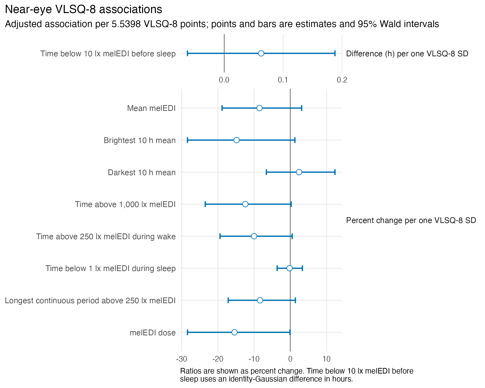
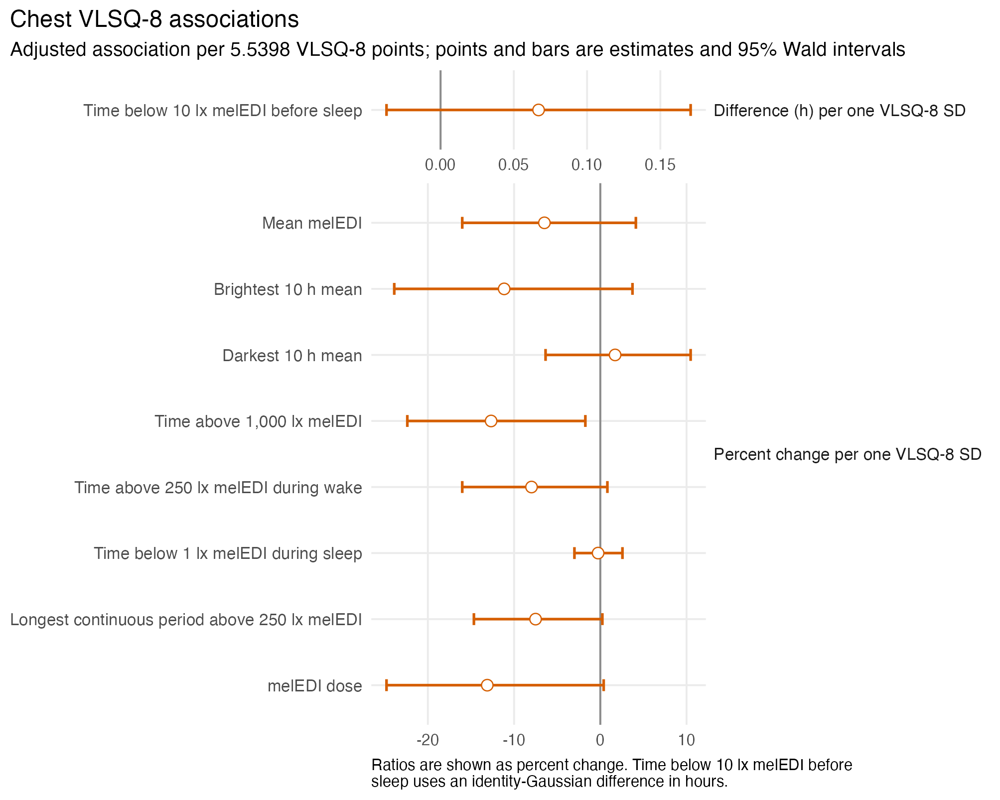
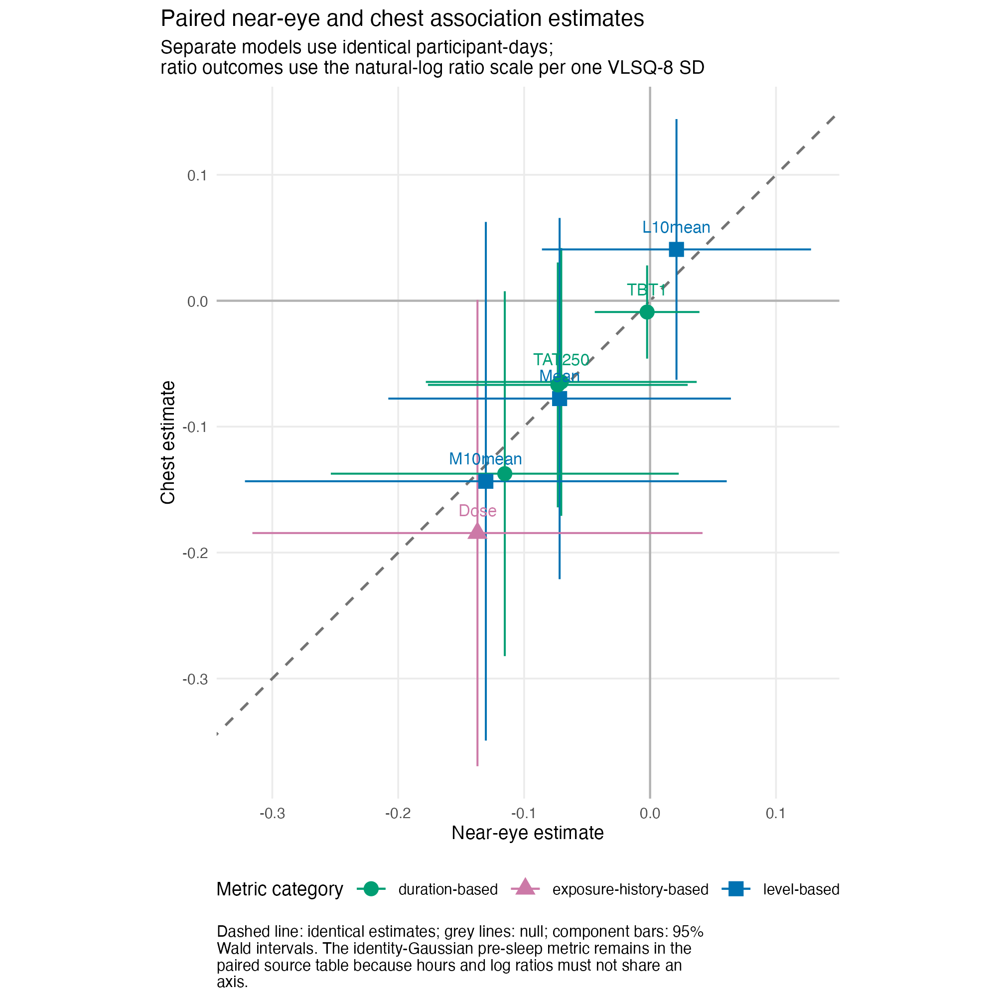
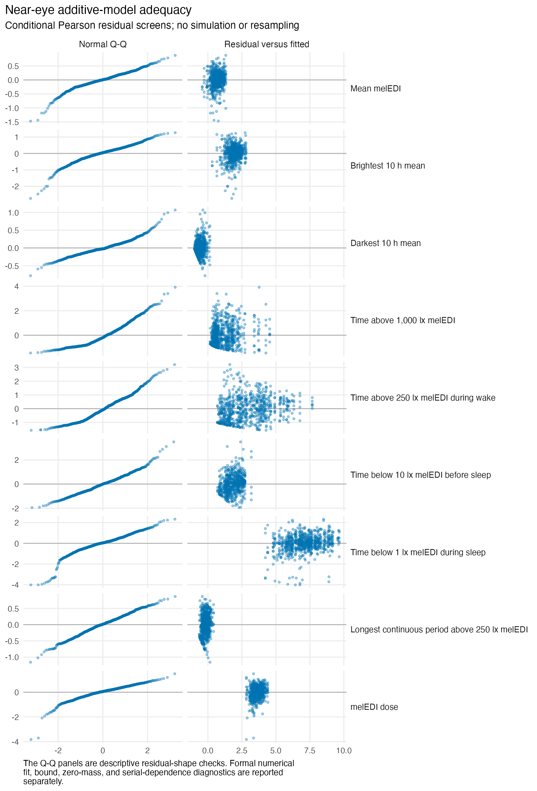
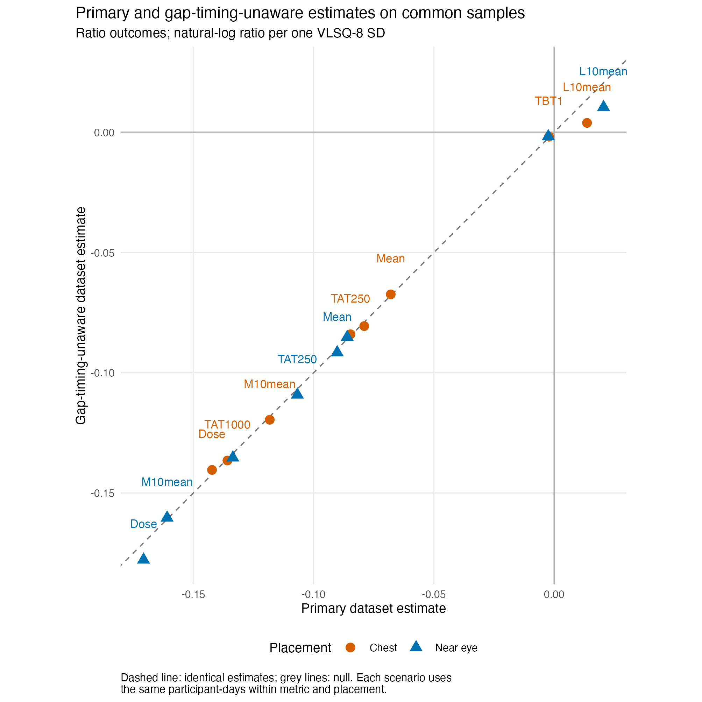

source("scripts/project.R")
analysis_setup()
source("scripts/pipeline/paths_io.R")
source("scripts/pipeline/p_value_display.R")
source("scripts/hypotheses/H08/h08_contract.R")
source("scripts/hypotheses/H08/h08_modeling.R")
root <- normalizePath(Sys.getenv("QUARTO_PROJECT_DIR", unset = getwd()))
producer <- "analyses/H08-light-sensitivity.qmd"
options(stringsAsFactors = FALSE, scipen = 999, dplyr.summarise.inform = FALSE)
roots <- list(model_data = file.path(root,"results/intermediate/model_data/H08"), models = file.path(root,"results/models/H08"), diagnostics = file.path(root,"results/csv/diagnostics/H08"), tables = file.path(root,"results/tables/H08"), figures = file.path(root,"results/images/H08"), source_data = file.path(root,"results/csv/source_data/H08"))
invisible(lapply(roots, dir.create, recursive=TRUE, showWarnings=FALSE))
metadata <- list()
source("scripts/pipeline/multiplicity.R")
h08_write_csv <- function(data, path) {
write_csv_artifact(data, path, producer = producer)
invisible(path)
}
h08_write_rds <- function(object, path) {
write_rds_artifact(object, path, producer = producer)
invisible(path)
}
input_contract <- h08_input_contract(root)H08: Visual light sensitivity and personal light exposure
Visual light sensitivity is related to participant-day light-exposure metrics, adjusting for site and accounting for repeated participant observations.
Data and model guide
The questionnaire preparation reconstructs VLSQ-8 from the eight ordered item codes and the recorded total-score rule. The constant offset in the total is retained, although centring removes it from a fitted slope. Scores are centred across participants, not within site; reported effects compare one participant-level SD. Nine participant-day outcomes come from the metric datasets, retaining metric-specific support and missingness.
The response registry specifies four Gaussian models after log10(value + 0.1), three Tweedie log-link models and two Gaussian identity models. Site adjustment and participant random intercepts account for site structure and repeated days. Average associations and VLSQ-8-by-site interactions are separate questions with complete nine-metric FDR families. Practical effects are ratios except for pre-sleep time below 10 lx, which is expressed as an hour difference. Estimates, Wald intervals, FDR decisions and model adequacy are shown separately.
Sensitivities address preprocessing, placement-matched data, exact identification of the longest bright-light period, dose definition, participant summaries and influence. A remaining gap can make the longest observed bright period a lower bound. The participant-summary Tweedie model for time above 1,000 lx has a convergence qualification; the corresponding Gamma boundary comparison is a diagnostic check, not a replacement of the specified analysis.
The executable sections below write fitted objects to results/models/H08/, reader tables to results/tables/H08/, and the supporting numerical and figure outputs under results/. Start with the calculations below or jump to findings and interpretation.
Setup
Load the reusable sample, formula, fit and diagnostic functions. The sections below perform each analysis and write its numerical results.
Questionnaire scoring and analysis samples
Use the sum of eight visual light sensitivity items, and construct metric-specific complete-case samples for each sensor, the paired placement comparison and the alternative preprocessing comparison.
metric_registry <- h08_metric_registry()
run_registry <- h08_run_registry()
family_registry <- h08_family_registry()
sensitivity_registry <- h08_sensitivity_registry()
formula_registry <- h08_formula_registry()
site_registry <- readr::read_csv(
file.path(root, "config/site_display_registry.csv"),
show_col_types = FALSE
) |>
dplyr::arrange(.data$display_order)
site_levels <- site_registry$site
metric_display <- readr::read_csv(
file.path(root, "config/metric_display_registry.csv"),
show_col_types = FALSE
) |>
dplyr::filter(.data$metric_id %in% metric_registry$metric_id) |>
dplyr::select(
.data$metric_id,
display_manuscript_name = .data$manuscript_name,
display_unit_registry = .data$display_unit
)
metric_display_audit <- metric_registry |>
dplyr::left_join(
metric_display,
by = "metric_id",
relationship = "one-to-one"
) |>
dplyr::mutate(
name_matches = .data$manuscript_name == .data$display_manuscript_name,
unit_matches = .data$display_unit == .data$display_unit_registry
)
if (
any(!metric_display_audit$name_matches | !metric_display_audit$unit_matches)
) {
h08_abort("The H08 metric display contract differs from the shared registry")
}
h05_response <- readr::read_csv(
file.path(root, "results/intermediate/model_data/H05/H05_metric_registry.csv"),
show_col_types = FALSE
) |>
dplyr::filter(.data$metric_id %in% metric_registry$metric_id) |>
dplyr::select(
.data$metric_id,
inherited_response_family = .data$response_family,
inherited_response_transform = .data$response_transform,
inherited_effect_scale = .data$effect_scale
)
response_contract_audit <- metric_registry |>
dplyr::left_join(
h05_response,
by = "metric_id",
relationship = "one-to-one"
) |>
dplyr::mutate(
response_family_matches = .data$response_family ==
.data$inherited_response_family,
response_transform_matches = .data$response_transform ==
.data$inherited_response_transform,
effect_scale_matches = .data$effect_scale == .data$inherited_effect_scale
)
if (
any(
!response_contract_audit$response_family_matches |
!response_contract_audit$response_transform_matches |
!response_contract_audit$effect_scale_matches
)
) {
h08_abort(
"The H08 response package differs from the shared H01/H05 response specification"
)
}
vlsq <- readRDS(input_contract$absolute_path[
input_contract$input_role == "normalized_vlsq8"
])
score_contract <- h08_score_contract(vlsq)
item_names <- c(
"sensitivity",
"glare",
"flicker",
"sensitivity_severity",
"headache",
"blurry_vision",
"ability",
"glasses"
)
item_matrix <- do.call(cbind, lapply(vlsq[item_names], as.integer))
score_audit_rows <- vlsq |>
dplyr::transmute(
.data$site,
.data$Id,
stored_VLSQ8 = .data$VLSQ8,
item_sum_1_to_5 = rowSums(item_matrix),
stored_minus_item_sum = .data$VLSQ8 - rowSums(item_matrix),
scoring_rule_verified = .data$stored_minus_item_sum == 5
)
score_audit <- tibble::tibble(
participants = nrow(vlsq),
sites = dplyr::n_distinct(vlsq$site),
missing_scores = sum(is.na(vlsq$VLSQ8)),
missing_item_cells = sum(is.na(item_matrix)),
observed_min = min(vlsq$VLSQ8),
observed_max = max(vlsq$VLSQ8),
observed_mean = mean(vlsq$VLSQ8),
observed_participant_sd = stats::sd(vlsq$VLSQ8),
stored_minus_item_sum_unique = paste(
sort(unique(score_audit_rows$stored_minus_item_sum)),
collapse = "|"
),
scoring_rule = score_contract$scoring_rule,
scoring_rule_verified = all(score_audit_rows$scoring_rule_verified),
score_definition_checked = TRUE
)
if (
score_audit$missing_scores != 0L ||
score_audit$missing_item_cells != 0L ||
any(!item_matrix %in% 1:5) ||
!isTRUE(score_audit$scoring_rule_verified)
) {
h08_abort("The H08 VLSQ-8 score input fails its scoring specification")
}
h08_write_csv(
metric_registry,
file.path(roots$model_data, "H08_metric_registry.csv")
)
h08_write_csv(run_registry, file.path(roots$model_data, "H08_run_registry.csv"))
h08_write_csv(
family_registry,
file.path(roots$model_data, "H08_family_registry.csv")
)
h08_write_csv(
sensitivity_registry,
file.path(roots$model_data, "H08_sensitivity_registry.csv")
)
h08_write_csv(
formula_registry,
file.path(roots$model_data, "H08_formula_registry.csv")
)
h08_write_csv(
score_audit,
file.path(roots$diagnostics, "H08_vlsq_score_audit.csv")
)
h08_write_csv(
score_audit_rows,
file.path(roots$diagnostics, "H08_vlsq_score_rows.csv")
)
h08_write_csv(
response_contract_audit,
file.path(roots$model_data, "H08_response_contract_audit.csv")
)
main_near_eye <- readRDS(input_contract$absolute_path[
input_contract$input_role == "primary_near_eye_metrics"
])
main_chest <- readRDS(input_contract$absolute_path[
input_contract$input_role == "primary_chest_metrics"
])
gap_source <- readRDS(input_contract$absolute_path[
input_contract$input_role == "gap_timing_unaware_metrics"
])
h01_main <- readRDS(input_contract$absolute_path[
input_contract$input_role == "primary_support_provenance"
])
h01_gap <- readRDS(input_contract$absolute_path[
input_contract$input_role == "gap_support_provenance"
])
h08_support_rows <- function(object, scenario_id) {
object$model_rows |>
dplyr::filter(
.data$scenario == "all_available",
.data$metric_id %in% metric_registry$metric_id
) |>
dplyr::transmute(
data_scenario_id = scenario_id,
.data$placement,
.data$site,
.data$Id,
local_date = as.Date(.data$local_date),
.data$metric_id,
h01_value = .data$value,
.data$metric_estimable,
.data$metric_failure_reason,
.data$metric_support_available,
.data$metric_support_unavailability_reason,
.data$metric_support_valid_minutes,
.data$metric_support_expected_minutes
)
}
support_rows <- dplyr::bind_rows(
h08_support_rows(h01_main, "main"),
h08_support_rows(h01_gap, "gap_timing_unaware")
)
if (
anyDuplicated(support_rows[c(
"data_scenario_id",
"placement",
"site",
"Id",
"local_date",
"metric_id"
)])
) {
h08_abort("H08 support provenance contains duplicate participant-day keys")
}
h08_main_long <- function(data, placement) {
source_columns <- metric_registry$source_column
data |>
dplyr::select(
.data$site,
.data$Id,
.data$local_date,
.data$VLSQ8,
.data$photoperiod_hours,
.data$valid_medi_real_minutes,
dplyr::all_of(source_columns),
longest_exact_value = .data$longest_bout_above_250_exact_only_sensitivity_h,
longest_exact_identifiable = .data$longest_bout_above_250_exact_identifiable,
dose_observed_value = .data$dose_observed_medi_lx_h
) |>
tidyr::pivot_longer(
cols = dplyr::all_of(source_columns),
names_to = "source_column",
values_to = "value"
) |>
dplyr::left_join(
metric_registry,
by = "source_column",
relationship = "many-to-one"
) |>
dplyr::mutate(
data_scenario_id = "main",
placement = placement,
local_date = as.Date(.data$local_date),
.before = 1L
)
}
main_rows <- dplyr::bind_rows(
h08_main_long(main_near_eye, "glasses"),
h08_main_long(main_chest, "chest")
)
gap_rows <- gap_source |>
dplyr::filter(.data$metric_id %in% metric_registry$metric_id) |>
dplyr::transmute(
data_scenario_id = "gap_timing_unaware",
placement = .data$position,
.data$site,
.data$Id,
local_date = as.Date(.data$local_date),
.data$metric_id,
value = .data$alternative_preprocessing_value,
photoperiod_hours = NA_real_,
valid_medi_real_minutes = NA_real_,
longest_exact_value = NA_real_,
longest_exact_identifiable = NA,
dose_observed_value = NA_real_
) |>
dplyr::left_join(
vlsq |>
dplyr::select(.data$site, .data$Id, .data$VLSQ8),
by = c("site", "Id"),
relationship = "many-to-one"
) |>
dplyr::left_join(
metric_registry,
by = "metric_id",
relationship = "many-to-one"
)
model_rows <- dplyr::bind_rows(main_rows, gap_rows) |>
dplyr::left_join(
support_rows,
by = c(
"data_scenario_id",
"placement",
"site",
"Id",
"local_date",
"metric_id"
),
relationship = "one-to-one"
)
if (nrow(model_rows) != nrow(main_rows) + nrow(gap_rows)) {
h08_abort("H08 support join changed the model-row count")
}
if (any(is.na(model_rows$h01_value) != is.na(model_rows$value))) {
h08_abort(
"H08 direct inputs and H01 support provenance differ in missingness"
)
}
finite_pair <- is.finite(model_rows$value) & is.finite(model_rows$h01_value)
value_difference <- abs(
model_rows$value[finite_pair] - model_rows$h01_value[finite_pair]
)
if (length(value_difference) > 0L && max(value_difference) > 1e-10) {
h08_abort(
"H08 direct inputs and H01 support provenance differ in metric values"
)
}
if (any(is.na(model_rows$VLSQ8))) {
h08_abort("H08 model rows contain an unmatched VLSQ-8 score")
}
if (
anyDuplicated(model_rows[c(
"data_scenario_id",
"placement",
"site",
"Id",
"local_date",
"metric_id"
)])
) {
h08_abort("H08 model rows contain duplicate participant-day keys")
}
missingness <- model_rows |>
dplyr::mutate(
availability_reason = dplyr::case_when(
is.finite(.data$value) ~ "available",
!is.na(.data$metric_failure_reason) &
nzchar(.data$metric_failure_reason) ~
.data$metric_failure_reason,
TRUE ~ "unavailable_without_more_specific_reason_in_input"
)
) |>
dplyr::count(
.data$data_scenario_id,
.data$placement,
.data$metric_order,
.data$metric_id,
.data$availability_reason,
name = "participant_days"
) |>
dplyr::arrange(
.data$data_scenario_id,
.data$placement,
.data$metric_order,
.data$availability_reason
)
h08_write_csv(
missingness,
file.path(roots$model_data, "H08_metric_missingness.csv")
)
h08_key_columns <- c("site", "Id", "local_date", "metric_id")
paired_keys <- model_rows |>
dplyr::filter(is.finite(.data$value), is.finite(.data$VLSQ8)) |>
dplyr::group_by(
.data$data_scenario_id,
.data$site,
.data$Id,
.data$local_date,
.data$metric_id
) |>
dplyr::summarise(
placements = dplyr::n_distinct(.data$placement),
.groups = "drop"
) |>
dplyr::filter(.data$placements == 2L) |>
dplyr::select(-.data$placements)
main_gap_common_keys <- model_rows |>
dplyr::filter(is.finite(.data$value), is.finite(.data$VLSQ8)) |>
dplyr::group_by(
.data$placement,
.data$site,
.data$Id,
.data$local_date,
.data$metric_id
) |>
dplyr::summarise(
scenarios = dplyr::n_distinct(.data$data_scenario_id),
.groups = "drop"
) |>
dplyr::filter(.data$scenarios == 2L) |>
dplyr::select(-.data$scenarios)
h08_rows_for_run <- function(rows, run) {
selected <- rows |>
dplyr::filter(
.data$data_scenario_id == run$data_scenario_id,
.data$placement == run$placement
)
if (run$sample_scenario == "paired_common_sample") {
selected <- selected |>
dplyr::inner_join(
paired_keys |>
dplyr::filter(.data$data_scenario_id == run$data_scenario_id),
by = c("data_scenario_id", h08_key_columns),
relationship = "many-to-one"
)
}
if (run$sample_scenario == "main_gap_common_sample") {
selected <- selected |>
dplyr::inner_join(
main_gap_common_keys |>
dplyr::filter(.data$placement == run$placement),
by = c("placement", h08_key_columns),
relationship = "many-to-one"
)
}
selected
}
model_frames <- list()
frame_index_rows <- list()
frame_site_rows <- list()
frame_row_exports <- list()
for (run_index in seq_len(nrow(run_registry))) {
run <- run_registry[run_index, , drop = FALSE]
run_rows <- h08_rows_for_run(model_rows, run)
for (metric_index in seq_len(nrow(metric_registry))) {
spec <- metric_registry[metric_index, , drop = FALSE]
frame <- h08_prepare_model_frame(
run_rows[run_rows$metric_id == spec$metric_id, , drop = FALSE],
spec,
site_levels,
score_contract
)
frame_key <- paste(run$run_id, spec$metric_id, sep = "__")
model_frames[[frame_key]] <- frame
frame_index_rows[[frame_key]] <- tibble::tibble(
run_order = run$run_order,
run_id = run$run_id,
data_scenario_id = run$data_scenario_id,
reader_scenario = run$reader_scenario,
placement = run$placement,
placement_label = run$placement_label,
sample_scenario = run$sample_scenario,
inferential_run = run$inferential_run,
metric_order = spec$metric_order,
metric_id = spec$metric_id,
manuscript_name = spec$manuscript_name,
participants = dplyr::n_distinct(frame$participant_key),
participant_days = nrow(frame),
sites = dplyr::n_distinct(frame$site),
metric_support_valid_hours = h08_complete_sum(
frame$metric_support_valid_minutes
) /
60,
metric_support_expected_hours = h08_complete_sum(
frame$metric_support_expected_minutes
) /
60,
metric_support_missing_rows = sum(
!is.finite(frame$metric_support_valid_minutes) |
!is.finite(frame$metric_support_expected_minutes)
),
site_levels = paste(levels(frame$site), collapse = "|"),
site_contrasts = paste0("contr.sum(", nlevels(frame$site), ")"),
score_center = score_contract$center,
score_participant_sd = score_contract$participant_sd,
row_key_hash = h08_key_hash(frame)
)
frame_site_rows[[frame_key]] <- frame |>
dplyr::group_by(.data$site) |>
dplyr::summarise(
participants = dplyr::n_distinct(.data$participant_key),
participant_days = dplyr::n(),
metric_support_valid_hours = h08_complete_sum(
.data$metric_support_valid_minutes
) /
60,
metric_support_expected_hours = h08_complete_sum(
.data$metric_support_expected_minutes
) /
60,
.groups = "drop"
) |>
dplyr::mutate(
run_id = run$run_id,
metric_order = spec$metric_order,
metric_id = spec$metric_id,
.before = 1L
)
frame_row_exports[[frame_key]] <- frame |>
dplyr::transmute(
run_id = run$run_id,
sample_scenario = run$sample_scenario,
metric_order = spec$metric_order,
metric_id = spec$metric_id,
.data$.model_row_id,
site = as.character(.data$site),
Id = as.character(.data$Id),
.data$local_date,
.data$value,
.data$response_value,
.data$VLSQ8,
.data$VLSQ8_c,
.data$photoperiod_hours,
.data$metric_support_valid_minutes,
.data$metric_support_expected_minutes
)
}
}
model_frame_index <- dplyr::bind_rows(frame_index_rows) |>
dplyr::arrange(.data$run_order, .data$metric_order)
model_frame_site <- dplyr::bind_rows(frame_site_rows) |>
dplyr::left_join(
site_registry |>
dplyr::select(.data$site, .data$display_order, .data$display_name),
by = "site",
relationship = "many-to-one"
) |>
dplyr::arrange(.data$run_id, .data$metric_order, .data$display_order)
model_frame_rows <- dplyr::bind_rows(frame_row_exports)
h08_write_csv(
model_frame_index,
file.path(roots$model_data, "H08_model_frame_index.csv")
)
h08_write_csv(
model_frame_site,
file.path(roots$model_data, "H08_model_frame_by_site.csv")
)
h08_write_csv(
model_frame_rows,
file.path(roots$model_data, "H08_model_frame_rows.csv")
)
h08_write_rds(
list(
hypothesis_id = "H08",
score_contract = score_contract,
metric_registry = metric_registry,
run_registry = run_registry,
model_frames = model_frames
),
file.path(roots$model_data, "H08_model_frames.rds")
)
paired_sample_audit <- model_frame_index |>
dplyr::filter(.data$sample_scenario == "paired_common_sample") |>
dplyr::select(
.data$data_scenario_id,
.data$metric_order,
.data$metric_id,
.data$placement,
.data$participants,
.data$participant_days,
.data$sites,
.data$row_key_hash
) |>
tidyr::pivot_wider(
names_from = .data$placement,
values_from = c(
.data$participants,
.data$participant_days,
.data$sites,
.data$row_key_hash
)
) |>
dplyr::mutate(
exact_counts_match = .data$participants_glasses ==
.data$participants_chest &
.data$participant_days_glasses == .data$participant_days_chest &
.data$sites_glasses == .data$sites_chest,
exact_row_keys_match = .data$row_key_hash_glasses ==
.data$row_key_hash_chest
)
if (
any(
!paired_sample_audit$exact_counts_match |
!paired_sample_audit$exact_row_keys_match
)
) {
h08_abort("An H08 paired placement frame does not use identical row keys")
}
h08_write_csv(
paired_sample_audit,
file.path(roots$model_data, "H08_paired_sample_audit.csv")
)
main_gap_sample_audit <- model_frame_index |>
dplyr::filter(.data$sample_scenario == "main_gap_common_sample") |>
dplyr::select(
.data$placement,
.data$metric_order,
.data$metric_id,
.data$data_scenario_id,
.data$participants,
.data$participant_days,
.data$sites,
.data$row_key_hash
) |>
tidyr::pivot_wider(
names_from = .data$data_scenario_id,
values_from = c(
.data$participants,
.data$participant_days,
.data$sites,
.data$row_key_hash
)
) |>
dplyr::mutate(
exact_counts_match = .data$participants_main ==
.data$participants_gap_timing_unaware &
.data$participant_days_main == .data$participant_days_gap_timing_unaware &
.data$sites_main == .data$sites_gap_timing_unaware,
exact_row_keys_match = .data$row_key_hash_main ==
.data$row_key_hash_gap_timing_unaware
)
if (
any(
!main_gap_sample_audit$exact_counts_match |
!main_gap_sample_audit$exact_row_keys_match
)
) {
h08_abort(
"An H08 primary--gap common-sample frame does not use identical keys"
)
}
h08_write_csv(
main_gap_sample_audit,
file.path(roots$model_data, "H08_main_gap_common_sample_audit.csv")
)
score_audit# A tibble: 1 × 12
participants sites missing_scores missing_item_cells observed_min observed_max
<int> <int> <int> <int> <dbl> <dbl>
1 184 9 0 0 13 39
# ℹ 6 more variables: observed_mean <dbl>, observed_participant_sd <dbl>,
# stored_minus_item_sum_unique <chr>, scoring_rule <chr>,
# scoring_rule_verified <lgl>, score_definition_checked <lgl>model_frame_index# A tibble: 108 × 22
run_order run_id data_scenario_id reader_scenario placement placement_label
<int> <chr> <chr> <chr> <chr> <chr>
1 1 main__g… main Primary dataset glasses Near eye
2 1 main__g… main Primary dataset glasses Near eye
3 1 main__g… main Primary dataset glasses Near eye
4 1 main__g… main Primary dataset glasses Near eye
5 1 main__g… main Primary dataset glasses Near eye
6 1 main__g… main Primary dataset glasses Near eye
7 1 main__g… main Primary dataset glasses Near eye
8 1 main__g… main Primary dataset glasses Near eye
9 1 main__g… main Primary dataset glasses Near eye
10 2 main__c… main Primary dataset chest Chest
# ℹ 98 more rows
# ℹ 16 more variables: sample_scenario <chr>, inferential_run <lgl>,
# metric_order <int>, metric_id <chr>, manuscript_name <chr>,
# participants <int>, participant_days <int>, sites <int>,
# metric_support_valid_hours <dbl>, metric_support_expected_hours <dbl>,
# metric_support_missing_rows <int>, site_levels <chr>, site_contrasts <chr>,
# score_center <dbl>, score_participant_sd <dbl>, row_key_hash <chr>Fit the main models
Fit the site-adjusted average effect and site interaction models for all available and paired samples. The response family and transformation depend on the exposure metric. Apply false discovery rate adjustment within the declared test families.
model_bundles <- list()
fit_index_rows <- list()
model_test_rows <- list()
model_effect_rows <- list()
model_site_slope_rows <- list()
model_prediction_rows <- list()
model_diagnostic_rows <- list()
diagnostic_plot_rows <- list()
influence_rows <- list()
for (run_index in seq_len(nrow(run_registry))) {
run <- run_registry[run_index, , drop = FALSE]
for (metric_index in seq_len(nrow(metric_registry))) {
spec <- metric_registry[metric_index, , drop = FALSE]
frame_key <- paste(run$run_id, spec$metric_id, sep = "__")
frame <- model_frames[[frame_key]]
message("H08 fit: ", run$run_id, " / ", spec$metric_id)
bundle <- h08_fit_bundle(frame, spec, formula_kind = "participant_day")
model_bundles[[frame_key]] <- bundle
context <- tibble::tibble(
run_order = run$run_order,
run_id = run$run_id,
data_scenario_id = run$data_scenario_id,
reader_scenario = run$reader_scenario,
placement = run$placement,
placement_label = run$placement_label,
sample_scenario = run$sample_scenario,
analytical_role = run$analytical_role,
inferential_run = run$inferential_run,
metric_order = spec$metric_order,
metric_id = spec$metric_id,
manuscript_name = spec$manuscript_name,
response_family = spec$response_family,
response_transform = spec$response_transform,
effect_scale = spec$effect_scale
)
fit_index_rows[[frame_key]] <- dplyr::bind_cols(
context[rep(1L, 3L), , drop = FALSE],
h08_fit_index_rows(bundle)
)
model_test_rows[[frame_key]] <- dplyr::bind_cols(
context[rep(1L, 2L), , drop = FALSE],
h08_bundle_tests(bundle, inferential = run$inferential_run)
)
model_effect_rows[[frame_key]] <- dplyr::bind_cols(
context,
h08_effect_summary(
bundle$fits$additive$model,
spec,
score_contract$participant_sd
)
)
site_slopes <- h08_site_slopes(
bundle$fits$interaction$model,
frame,
spec,
score_contract$participant_sd
)
model_site_slope_rows[[frame_key]] <- dplyr::bind_cols(
context[rep(1L, nrow(site_slopes)), , drop = FALSE],
site_slopes
)
predictions <- h08_centered_predictions(
bundle$fits$additive$model,
frame,
spec,
score_contract$participant_sd
)
model_prediction_rows[[frame_key]] <- dplyr::bind_cols(
context[rep(1L, nrow(predictions)), , drop = FALSE],
predictions
)
diagnostic <- h08_model_diagnostics(bundle, frame)
model_diagnostic_rows[[frame_key]] <- dplyr::bind_cols(context, diagnostic)
if (
run$run_id %in%
c(
"main__glasses__all_available",
"main__chest__all_available"
)
) {
plot_data <- h08_diagnostic_plot_data(bundle$fits$additive$model, frame)
diagnostic_plot_rows[[frame_key]] <- dplyr::bind_cols(
context[rep(1L, nrow(plot_data)), , drop = FALSE],
plot_data
)
influence <- h08_participant_influence_screen(
bundle$fits$additive$model,
frame,
n = 5L
)
influence_rows[[frame_key]] <- dplyr::bind_cols(
context[rep(1L, nrow(influence)), , drop = FALSE],
influence
)
}
}
}
fit_index <- dplyr::bind_rows(fit_index_rows) |>
dplyr::arrange(.data$run_order, .data$metric_order, .data$model_name)
model_tests <- dplyr::bind_rows(model_test_rows) |>
dplyr::left_join(
family_registry,
by = c("run_id", "comparison_id"),
relationship = "many-to-one"
)
model_tests$p_adjusted <- NA_real_
for (family_id in family_registry$family_id) {
rows <- which(model_tests$family_id == family_id)
planned_n <- unique(model_tests$planned_n[rows])
if (length(rows) != 9L || length(planned_n) != 1L || planned_n != 9L) {
h08_abort(
"Multiplicity family `%s` is not a complete nine-row family",
family_id
)
}
model_tests$p_adjusted[rows] <- adjust_p_family(
model_tests$p_raw[rows],
method = "BH",
n = 9L
)
}
model_tests <- model_tests |>
dplyr::mutate(
raw_significant = !is.na(.data$p_raw) & .data$p_raw <= 0.05,
adjusted_significant = !is.na(.data$p_adjusted) & .data$p_adjusted <= 0.05,
raw_p_display = nh_format_p_value(.data$p_raw),
adjusted_p_display = nh_format_p_value(.data$p_adjusted)
) |>
dplyr::arrange(.data$run_order, .data$comparison_id, .data$metric_order)
family_audit <- model_tests |>
dplyr::filter(!is.na(.data$family_id)) |>
dplyr::group_by(
.data$family_id,
.data$run_id,
.data$comparison_id,
.data$planned_n,
.data$multiplicity_method,
.data$role
) |>
dplyr::summarise(
registered_rows = dplyr::n(),
observed_raw_p = sum(is.finite(.data$p_raw)),
observed_adjusted_p = sum(is.finite(.data$p_adjusted)),
raw_significant_n = sum(.data$raw_significant),
adjusted_significant_n = sum(.data$adjusted_significant),
complete_nine_member_family = .data$registered_rows == 9L,
independent_recalculation_matches = isTRUE(all.equal(
.data$p_adjusted,
stats::p.adjust(.data$p_raw, method = "BH", n = 9L)
)),
.groups = "drop"
)
if (
any(
!family_audit$complete_nine_member_family |
!family_audit$independent_recalculation_matches
)
) {
h08_abort("An H08 multiplicity family failed independent verification")
}
model_effects <- dplyr::bind_rows(model_effect_rows)
model_site_slopes <- dplyr::bind_rows(model_site_slope_rows) |>
dplyr::left_join(
site_registry |>
dplyr::select(
.data$site,
.data$display_order,
.data$display_name,
.data$color_hex
),
by = "site",
relationship = "many-to-one"
) |>
dplyr::arrange(.data$run_order, .data$metric_order, .data$display_order)
model_predictions <- dplyr::bind_rows(model_prediction_rows)
model_diagnostics <- dplyr::bind_rows(model_diagnostic_rows) |>
dplyr::arrange(.data$run_order, .data$metric_order)
diagnostic_plot_data <- dplyr::bind_rows(diagnostic_plot_rows)
participant_influence <- dplyr::bind_rows(influence_rows)
average_tests <- model_tests |>
dplyr::filter(.data$comparison_id == "average_vlsq") |>
dplyr::select(
.data$run_id,
.data$metric_id,
average_lrt_statistic = .data$statistic,
average_lrt_df = .data$df,
average_p_raw = .data$p_raw,
average_p_adjusted = .data$p_adjusted,
average_adjusted_significant = .data$adjusted_significant,
average_comparison_status = .data$comparison_status
)
interaction_tests <- model_tests |>
dplyr::filter(.data$comparison_id == "site_heterogeneity") |>
dplyr::select(
.data$run_id,
.data$metric_id,
interaction_lrt_statistic = .data$statistic,
interaction_lrt_df = .data$df,
interaction_p_raw = .data$p_raw,
interaction_p_adjusted = .data$p_adjusted,
interaction_adjusted_significant = .data$adjusted_significant,
interaction_comparison_status = .data$comparison_status
)
model_results_master <- model_frame_index |>
dplyr::left_join(
model_effects,
by = c(
"run_order",
"run_id",
"data_scenario_id",
"reader_scenario",
"placement",
"placement_label",
"sample_scenario",
"inferential_run",
"metric_order",
"metric_id",
"manuscript_name"
),
relationship = "one-to-one"
) |>
dplyr::left_join(
average_tests,
by = c("run_id", "metric_id"),
relationship = "one-to-one"
) |>
dplyr::left_join(
interaction_tests,
by = c("run_id", "metric_id"),
relationship = "one-to-one"
) |>
dplyr::left_join(
model_diagnostics |>
dplyr::select(
.data$run_id,
.data$metric_id,
.data$diagnostic_status,
.data$diagnostic_issues,
.data$average_effect_status,
.data$interaction_effect_status
),
by = c("run_id", "metric_id"),
relationship = "one-to-one"
)
h08_write_csv(
fit_index,
file.path(roots$models, "H08_model_fit_index.csv")
)
h08_write_csv(model_tests, file.path(roots$tables, "H08_model_tests.csv"))
h08_write_csv(model_effects, file.path(roots$tables, "H08_model_effects.csv"))
h08_write_csv(
model_site_slopes,
file.path(roots$tables, "H08_site_specific_slopes.csv")
)
h08_write_csv(
model_predictions,
file.path(roots$tables, "H08_centered_predictions.csv")
)
h08_write_csv(family_audit, file.path(roots$tables, "H08_family_audit.csv"))
h08_write_csv(
model_results_master,
file.path(roots$tables, "H08_model_results_master.csv")
)
h08_write_csv(
model_diagnostics,
file.path(roots$diagnostics, "H08_model_diagnostics.csv")
)
h08_write_csv(
diagnostic_plot_data,
file.path(roots$source_data, "H08_primary_diagnostic_plot_data.csv")
)
h08_write_csv(
participant_influence,
file.path(roots$diagnostics, "H08_participant_influence_screen.csv")
)
h08_write_rds(
list(
hypothesis_id = "H08",
score_contract = score_contract,
metric_registry = metric_registry,
run_registry = run_registry,
model_bundles = model_bundles
),
file.path(roots$models, "H08_model_bundles.rds")
)
model_results_master# A tibble: 108 × 59
run_order run_id data_scenario_id reader_scenario placement placement_label
<int> <chr> <chr> <chr> <chr> <chr>
1 1 main__g… main Primary dataset glasses Near eye
2 1 main__g… main Primary dataset glasses Near eye
3 1 main__g… main Primary dataset glasses Near eye
4 1 main__g… main Primary dataset glasses Near eye
5 1 main__g… main Primary dataset glasses Near eye
6 1 main__g… main Primary dataset glasses Near eye
7 1 main__g… main Primary dataset glasses Near eye
8 1 main__g… main Primary dataset glasses Near eye
9 1 main__g… main Primary dataset glasses Near eye
10 2 main__c… main Primary dataset chest Chest
# ℹ 98 more rows
# ℹ 53 more variables: sample_scenario <chr>, inferential_run <lgl>,
# metric_order <int>, metric_id <chr>, manuscript_name <chr>,
# participants <int>, participant_days <int>, sites <int>,
# metric_support_valid_hours <dbl>, metric_support_expected_hours <dbl>,
# metric_support_missing_rows <int>, site_levels <chr>, site_contrasts <chr>,
# score_center <dbl>, score_participant_sd <dbl>, row_key_hash <chr>, …Scientific sensitivity analyses
Refit after adding photoperiod, using participant-level summaries, using exact longest-interval variants and observed dose, and omitting one site at a time.
sensitivity_models <- list()
photoperiod_rows <- list()
participant_rows <- list()
for (placement in c("glasses", "chest")) {
run_id <- paste("main", placement, "all_available", sep = "__")
for (metric_index in seq_len(nrow(metric_registry))) {
spec <- metric_registry[metric_index, , drop = FALSE]
key <- paste(run_id, spec$metric_id, sep = "__")
frame <- model_frames[[key]]
if (any(!is.finite(frame$photoperiod_c))) {
h08_abort("Primary H08 photoperiod is incomplete for `%s`", key)
}
photo_key <- paste("photoperiod", placement, spec$metric_id, sep = "__")
photo_bundle <- h08_fit_bundle(frame, spec, formula_kind = "photoperiod")
sensitivity_models[[photo_key]] <- photo_bundle
photo_effect <- h08_effect_summary(
photo_bundle$fits$additive$model,
spec,
score_contract$participant_sd
)
photo_status <- h08_model_fit_status(photo_bundle$fits$additive$model)
photo_condition <- h08_model_condition(photo_bundle$fits$additive$model)
photoperiod_rows[[photo_key]] <- dplyr::bind_cols(
tibble::tibble(
sensitivity_id = "photoperiod_adjusted",
placement = placement,
placement_label = ifelse(placement == "glasses", "Near eye", "Chest"),
metric_order = spec$metric_order,
metric_id = spec$metric_id,
manuscript_name = spec$manuscript_name,
participants = dplyr::n_distinct(frame$participant_key),
participant_days = nrow(frame),
sites = dplyr::n_distinct(frame$site),
row_key_hash = h08_key_hash(frame),
formula = paste(
deparse(h08_formula_set("photoperiod")$additive),
collapse = " "
)
),
photo_effect,
photo_status,
photo_condition
)
participant_frame <- h08_prepare_participant_summary(
frame,
spec,
site_levels
)
participant_key <- paste(
"participant",
placement,
spec$metric_id,
sep = "__"
)
participant_bundle <- h08_fit_bundle(
participant_frame,
spec,
formula_kind = "participant"
)
sensitivity_models[[participant_key]] <- participant_bundle
participant_effect <- h08_effect_summary(
participant_bundle$fits$additive$model,
spec,
score_contract$participant_sd
)
participant_status <- h08_model_fit_status(
participant_bundle$fits$additive$model
)
participant_condition <- h08_model_condition(
participant_bundle$fits$additive$model
)
participant_rows[[participant_key]] <- dplyr::bind_cols(
tibble::tibble(
sensitivity_id = "participant_summary",
placement = placement,
placement_label = ifelse(placement == "glasses", "Near eye", "Chest"),
metric_order = spec$metric_order,
metric_id = spec$metric_id,
manuscript_name = spec$manuscript_name,
participants = nrow(participant_frame),
participant_days_contributing = sum(participant_frame$participant_days),
sites = dplyr::n_distinct(participant_frame$site),
metric_support_valid_hours = h08_complete_sum(
participant_frame$metric_support_valid_minutes
) /
60,
metric_support_expected_hours = h08_complete_sum(
participant_frame$metric_support_expected_minutes
) /
60,
row_key_hash = h08_key_hash(participant_frame),
formula = paste(
deparse(h08_formula_set("participant")$additive),
collapse = " "
)
),
participant_effect,
participant_status,
participant_condition
)
}
}
photoperiod_sensitivity <- dplyr::bind_rows(photoperiod_rows) |>
dplyr::arrange(.data$placement, .data$metric_order)
participant_summary_sensitivity <- dplyr::bind_rows(participant_rows) |>
dplyr::arrange(.data$placement, .data$metric_order)
h08_write_csv(
photoperiod_sensitivity,
file.path(roots$tables, "H08_photoperiod_sensitivity.csv")
)
h08_write_csv(
participant_summary_sensitivity,
file.path(roots$tables, "H08_participant_summary_sensitivity.csv")
)
h08_metric_variant_runs <- function(
variant = c("exact_longest", "observed_dose")
) {
variant <- match.arg(variant)
if (variant == "exact_longest") {
metric_id <- "longest_bout_above_250"
value_column <- "longest_exact_value"
sensitivity_id <- "longest_period_exact_only"
} else {
metric_id <- "dose_time_sensitive_corrected_medi"
value_column <- "dose_observed_value"
sensitivity_id <- "observed_dose_common_sample"
}
source <- model_rows |>
dplyr::filter(
.data$data_scenario_id == "main",
.data$metric_id == .env$metric_id,
is.finite(.data$value),
is.finite(.data[[value_column]])
)
variant_pair_keys <- source |>
dplyr::group_by(
.data$site,
.data$Id,
.data$local_date,
.data$metric_id
) |>
dplyr::summarise(
placements = dplyr::n_distinct(.data$placement),
.groups = "drop"
) |>
dplyr::filter(.data$placements == 2L) |>
dplyr::select(-.data$placements)
runs <- run_registry |>
dplyr::filter(
.data$data_scenario_id == "main",
.data$sample_scenario %in% c("all_available", "paired_common_sample")
)
result_rows <- list()
models <- list()
for (index in seq_len(nrow(runs))) {
run <- runs[index, , drop = FALSE]
selected <- source |>
dplyr::filter(.data$placement == run$placement)
if (run$sample_scenario == "paired_common_sample") {
selected <- selected |>
dplyr::inner_join(
variant_pair_keys,
by = h08_key_columns,
relationship = "many-to-one"
)
}
selected$value <- selected[[value_column]]
spec <- metric_registry[
metric_registry$metric_id == metric_id,
,
drop = FALSE
]
frame <- h08_prepare_model_frame(
selected,
spec,
site_levels,
score_contract
)
key <- paste(sensitivity_id, run$placement, run$sample_scenario, sep = "__")
bundle <- h08_fit_bundle(frame, spec, formula_kind = "participant_day")
models[[key]] <- bundle
result_rows[[key]] <- dplyr::bind_cols(
tibble::tibble(
sensitivity_id = sensitivity_id,
placement = run$placement,
placement_label = run$placement_label,
sample_scenario = run$sample_scenario,
metric_order = spec$metric_order,
metric_id = metric_id,
manuscript_name = spec$manuscript_name,
participants = dplyr::n_distinct(frame$participant_key),
participant_days = nrow(frame),
sites = dplyr::n_distinct(frame$site),
metric_support_valid_hours = h08_complete_sum(
frame$metric_support_valid_minutes
) /
60,
metric_support_expected_hours = h08_complete_sum(
frame$metric_support_expected_minutes
) /
60,
row_key_hash = h08_key_hash(frame)
),
h08_effect_summary(
bundle$fits$additive$model,
spec,
score_contract$participant_sd
),
h08_model_fit_status(bundle$fits$additive$model)
)
}
list(results = dplyr::bind_rows(result_rows), models = models)
}
exact_longest <- h08_metric_variant_runs("exact_longest")
observed_dose <- h08_metric_variant_runs("observed_dose")
sensitivity_models <- c(
sensitivity_models,
exact_longest$models,
observed_dose$models
)
h08_write_csv(
exact_longest$results,
file.path(
roots$tables,
"H08_exactly_identified_longest_period_sensitivity.csv"
)
)
h08_write_csv(
observed_dose$results,
file.path(roots$tables, "H08_observed_dose_sensitivity.csv")
)
leave_one_site_out_rows <- list()
for (placement in c("glasses", "chest")) {
run_id <- paste("main", placement, "all_available", sep = "__")
for (metric_index in seq_len(nrow(metric_registry))) {
spec <- metric_registry[metric_index, , drop = FALSE]
key <- paste(run_id, spec$metric_id, sep = "__")
frame <- model_frames[[key]]
full_effect <- model_effects |>
dplyr::filter(
.data$run_id == .env$run_id,
.data$metric_id == spec$metric_id
)
loo <- h08_leave_one_site_out(
frame,
spec,
score_contract$participant_sd,
full_effect$estimate_model_per_point
)
leave_one_site_out_rows[[key]] <- dplyr::bind_cols(
tibble::tibble(
placement = placement,
placement_label = ifelse(placement == "glasses", "Near eye", "Chest"),
metric_order = spec$metric_order,
metric_id = spec$metric_id,
manuscript_name = spec$manuscript_name
)[rep(1L, nrow(loo)), , drop = FALSE],
loo
)
}
}
leave_one_site_out <- dplyr::bind_rows(leave_one_site_out_rows) |>
dplyr::left_join(
site_registry |>
dplyr::select(
omitted_site = .data$site,
omitted_site_display_order = .data$display_order,
omitted_site_name = .data$display_name
),
by = "omitted_site",
relationship = "many-to-one"
) |>
dplyr::arrange(
.data$placement,
.data$metric_order,
.data$omitted_site_display_order
)
h08_write_csv(
leave_one_site_out,
file.path(roots$diagnostics, "H08_leave_one_site_out.csv")
)
h08_write_rds(
list(
hypothesis_id = "H08",
sensitivity_registry = sensitivity_registry,
sensitivity_models = sensitivity_models
),
file.path(roots$models, "H08_sensitivity_models.rds")
)
h08_stability_class <- function(
estimate_a,
low_a,
high_a,
estimate_b,
low_b,
high_b,
conclusion_a = NA,
conclusion_b = NA
) {
if (
any(!is.finite(c(estimate_a, low_a, high_a, estimate_b, low_b, high_b)))
) {
return("non-estimable")
}
if (
sign(estimate_a) != sign(estimate_b) && estimate_a != 0 && estimate_b != 0
) {
return("direction-sensitive")
}
if (
!is.na(conclusion_a) && !is.na(conclusion_b) && conclusion_a != conclusion_b
) {
return("multiplicity-conclusion-sensitive")
}
excludes_zero_a <- low_a > 0 || high_a < 0
excludes_zero_b <- low_b > 0 || high_b < 0
if (excludes_zero_a != excludes_zero_b) {
return("precision-sensitive")
}
mutually_contained <-
estimate_a >= low_b &&
estimate_a <= high_b &&
estimate_b >= low_a &&
estimate_b <= high_a
if (!mutually_contained) {
return("magnitude-sensitive")
}
"stable within model uncertainty"
}
scenario_effects <- model_results_master |>
dplyr::filter(
.data$sample_scenario %in% c("all_available", "main_gap_common_sample"),
.data$data_scenario_id %in% c("main", "gap_timing_unaware")
) |>
dplyr::select(
.data$placement,
.data$sample_scenario,
.data$metric_order,
.data$metric_id,
.data$manuscript_name,
.data$data_scenario_id,
estimate = .data$estimate_model_per_sd,
conf_low = .data$conf_low_model_per_sd,
conf_high = .data$conf_high_model_per_sd,
p_adjusted = .data$average_p_adjusted,
adjusted_significant = .data$average_adjusted_significant,
participants = .data$participants,
participant_days = .data$participant_days,
sites = .data$sites,
row_key_hash = .data$row_key_hash
) |>
tidyr::pivot_wider(
names_from = .data$data_scenario_id,
values_from = c(
.data$estimate,
.data$conf_low,
.data$conf_high,
.data$p_adjusted,
.data$adjusted_significant,
.data$participants,
.data$participant_days,
.data$sites,
.data$row_key_hash
)
) |>
dplyr::rowwise() |>
dplyr::mutate(
exact_common_keys = dplyr::if_else(
.data$sample_scenario == "main_gap_common_sample",
.data$row_key_hash_main == .data$row_key_hash_gap_timing_unaware,
NA
),
stability_classification = h08_stability_class(
.data$estimate_main,
.data$conf_low_main,
.data$conf_high_main,
.data$estimate_gap_timing_unaware,
.data$conf_low_gap_timing_unaware,
.data$conf_high_gap_timing_unaware,
.data$adjusted_significant_main,
.data$adjusted_significant_gap_timing_unaware
)
) |>
dplyr::ungroup() |>
dplyr::arrange(.data$sample_scenario, .data$placement, .data$metric_order)
loo_summary <- leave_one_site_out |>
dplyr::group_by(
.data$placement,
.data$placement_label,
.data$metric_order,
.data$metric_id,
.data$manuscript_name
) |>
dplyr::summarise(
refits = dplyr::n(),
successful_refits = sum(.data$refit_status == "PASS"),
sign_reversal_any = any(.data$sign_reversal, na.rm = TRUE),
maximum_relative_absolute_change = max(
.data$relative_absolute_change,
na.rm = TRUE
),
most_influential_omitted_site = .data$omitted_site_name[
which.max(.data$relative_absolute_change)
],
influence_status = dplyr::case_when(
.data$successful_refits < .data$refits ~ "non-estimable refit present",
.data$sign_reversal_any ~ "direction-sensitive to one site",
.data$maximum_relative_absolute_change >= 0.5 ~
"magnitude-sensitive to one site",
TRUE ~ "direction stable in leave-one-site-out refits"
),
.groups = "drop"
)
response_family_check <- model_diagnostics |>
dplyr::filter(.data$inferential_run) |>
dplyr::group_by(
.data$metric_order,
.data$metric_id,
.data$manuscript_name,
.data$response_family,
.data$response_transform
) |>
dplyr::summarise(
inferential_targets = dplyr::n(),
major_failures = sum(.data$diagnostic_status == "MODEL_CHECK_FAILED"),
review_targets = sum(.data$diagnostic_status == "REVIEW_WITH_LIMITATIONS"),
average_non_estimable = sum(.data$average_effect_status != "ESTIMABLE"),
interaction_non_estimable = sum(
.data$interaction_effect_status != "ESTIMABLE"
),
family_check_status = dplyr::case_when(
.data$major_failures > 0L || .data$average_non_estimable > 0L ~
"UNRESOLVED_COMMON_RESPONSE_FAMILY_CHECK",
.data$review_targets > 0L ~ "RETAIN_WITH_EXPLICIT_LIMITATIONS",
TRUE ~ "PASS"
),
.groups = "drop"
)
h08_write_csv(
scenario_effects,
file.path(roots$tables, "H08_gap_timing_unaware_sensitivity.csv")
)
h08_write_csv(
loo_summary,
file.path(roots$diagnostics, "H08_leave_one_site_out_summary.csv")
)
h08_write_csv(
response_family_check,
file.path(roots$diagnostics, "H08_response_family_check.csv")
)
scenario_effects# A tibble: 36 × 25
placement sample_scenario metric_order metric_id manuscript_name
<chr> <chr> <int> <chr> <chr>
1 chest all_available 1 daily_geometric_mean_… Mean melEDI
2 chest all_available 2 m10_mean_medi Brightest 10 h…
3 chest all_available 3 l10_mean_medi Darkest 10 h m…
4 chest all_available 4 duration_above_1000 Time above 1,0…
5 chest all_available 5 duration_above_250_wa… Time above 250…
6 chest all_available 6 duration_below_10_pre… Time below 10 …
7 chest all_available 7 duration_below_1_slee… Time below 1 l…
8 chest all_available 8 longest_bout_above_250 Longest contin…
9 chest all_available 9 dose_time_sensitive_c… melEDI dose
10 glasses all_available 1 daily_geometric_mean_… Mean melEDI
# ℹ 26 more rows
# ℹ 20 more variables: estimate_main <dbl>, estimate_gap_timing_unaware <dbl>,
# conf_low_main <dbl>, conf_low_gap_timing_unaware <dbl>,
# conf_high_main <dbl>, conf_high_gap_timing_unaware <dbl>,
# p_adjusted_main <dbl>, p_adjusted_gap_timing_unaware <dbl>,
# adjusted_significant_main <lgl>,
# adjusted_significant_gap_timing_unaware <lgl>, participants_main <int>, …loo_summary# A tibble: 18 × 11
placement placement_label metric_order metric_id manuscript_name refits
<chr> <chr> <int> <chr> <chr> <int>
1 chest Chest 1 daily_geometri… Mean melEDI 8
2 chest Chest 2 m10_mean_medi Brightest 10 h… 8
3 chest Chest 3 l10_mean_medi Darkest 10 h m… 8
4 chest Chest 4 duration_above… Time above 1,0… 8
5 chest Chest 5 duration_above… Time above 250… 8
6 chest Chest 6 duration_below… Time below 10 … 8
7 chest Chest 7 duration_below… Time below 1 l… 8
8 chest Chest 8 longest_bout_a… Longest contin… 8
9 chest Chest 9 dose_time_sens… melEDI dose 8
10 glasses Near eye 1 daily_geometri… Mean melEDI 9
11 glasses Near eye 2 m10_mean_medi Brightest 10 h… 9
12 glasses Near eye 3 l10_mean_medi Darkest 10 h m… 9
13 glasses Near eye 4 duration_above… Time above 1,0… 9
14 glasses Near eye 5 duration_above… Time above 250… 9
15 glasses Near eye 6 duration_below… Time below 10 … 9
16 glasses Near eye 7 duration_below… Time below 1 l… 9
17 glasses Near eye 8 longest_bout_a… Longest contin… 9
18 glasses Near eye 9 dose_time_sens… melEDI dose 9
# ℹ 5 more variables: successful_refits <int>, sign_reversal_any <lgl>,
# maximum_relative_absolute_change <dbl>,
# most_influential_omitted_site <chr>, influence_status <chr>Figures and numerical plot data
Export each plotted estimate and interval to CSV, then display placement agreement, preprocessing agreement and residual diagnostics.
h08_effect_plot_data <- model_results_master |>
dplyr::filter(
.data$run_id %in%
c(
"main__glasses__all_available",
"main__chest__all_available"
)
) |>
dplyr::mutate(
plot_estimate = dplyr::if_else(
.data$effect_type == "ratio",
100 * (.data$estimate_practical_per_sd - 1),
.data$estimate_practical_per_sd
),
plot_conf_low = dplyr::if_else(
.data$effect_type == "ratio",
100 * (.data$conf_low_practical_per_sd - 1),
.data$conf_low_practical_per_sd
),
plot_conf_high = dplyr::if_else(
.data$effect_type == "ratio",
100 * (.data$conf_high_practical_per_sd - 1),
.data$conf_high_practical_per_sd
),
plot_scale = dplyr::if_else(
.data$effect_type == "ratio",
"Percent change per one VLSQ-8 SD",
"Difference (h) per one VLSQ-8 SD"
),
metric_label = factor(
.data$manuscript_name,
levels = rev(metric_registry$manuscript_name)
)
)
h08_save_effect_plot <- function(data, placement, stem, title, colour) {
plot_data <- data |>
dplyr::filter(.data$placement == .env$placement)
source_path <- file.path(
roots$source_data,
paste0(stem, "_data.csv")
)
h08_write_csv(plot_data, source_path)
plot <- ggplot2::ggplot(
plot_data,
ggplot2::aes(
x = .data$plot_estimate,
y = .data$metric_label,
xmin = .data$plot_conf_low,
xmax = .data$plot_conf_high
)
) +
ggplot2::geom_vline(xintercept = 0, colour = "grey55", linewidth = 0.5) +
ggplot2::geom_errorbar(
orientation = "y",
width = 0.18,
linewidth = 0.65,
colour = colour
) +
ggplot2::geom_point(
size = 2.3,
shape = 21,
fill = "white",
colour = colour
) +
ggplot2::facet_wrap(
ggplot2::vars(.data$plot_scale),
ncol = 1,
scales = "free",
space = "free_y",
strip.position = "right"
) +
ggplot2::labs(
title = title,
subtitle = paste0(
"Adjusted association per ",
sprintf("%.4f", score_contract$participant_sd),
" VLSQ-8 points; points and bars are estimates and 95% Wald intervals"
),
x = NULL,
y = NULL,
caption = paste0(
"Ratios are shown as percent change. Time below 10 lx melEDI before sleep ",
"uses an identity-Gaussian difference in hours."
)
) +
ggplot2::theme_minimal(base_size = 10) +
ggplot2::theme(
plot.title.position = "plot",
panel.grid.minor = ggplot2::element_blank(),
strip.text.y = ggplot2::element_text(angle = 0, hjust = 0),
axis.text.y = ggplot2::element_text(size = 8),
plot.caption = ggplot2::element_text(hjust = 0, size = 7)
)
ggplot2::ggsave(
file.path(roots$figures, paste0(stem, ".png")),
plot,
width = 9,
height = 7.2,
units = "in",
dpi = 300,
bg = "white"
)
ggplot2::ggsave(
file.path(roots$figures, paste0(stem, ".pdf")),
plot,
width = 9,
height = 7.2,
units = "in",
bg = "white"
)
invisible(source_path)
}
h08_save_effect_plot(
h08_effect_plot_data,
"glasses",
"H08_near_eye_effects",
"Near-eye VLSQ-8 associations",
"#0072B2"
)
h08_save_effect_plot(
h08_effect_plot_data,
"chest",
"H08_chest_effects",
"Chest VLSQ-8 associations",
"#D55E00"
)
paired_effects <- model_results_master |>
dplyr::filter(
.data$data_scenario_id == "main",
.data$sample_scenario == "paired_common_sample"
) |>
dplyr::left_join(
metric_registry |>
dplyr::select(
.data$metric_id,
.data$abbreviation,
.data$manuscript_category
),
by = "metric_id",
relationship = "many-to-one"
) |>
dplyr::mutate(
comparison_estimate = dplyr::if_else(
.data$effect_type == "ratio",
log(pmax(.data$estimate_practical_per_sd, .Machine$double.xmin)),
.data$estimate_practical_per_sd
),
comparison_low = dplyr::if_else(
.data$effect_type == "ratio",
log(pmax(.data$conf_low_practical_per_sd, .Machine$double.xmin)),
.data$conf_low_practical_per_sd
),
comparison_high = dplyr::if_else(
.data$effect_type == "ratio",
log(pmax(.data$conf_high_practical_per_sd, .Machine$double.xmin)),
.data$conf_high_practical_per_sd
),
comparison_scale = dplyr::if_else(
.data$effect_type == "ratio",
"Natural-log ratio per one VLSQ-8 SD",
"Difference in hours per one VLSQ-8 SD"
)
) |>
dplyr::select(
.data$metric_order,
.data$metric_id,
.data$manuscript_name,
.data$abbreviation,
.data$manuscript_category,
.data$effect_type,
.data$comparison_scale,
.data$placement,
.data$comparison_estimate,
.data$comparison_low,
.data$comparison_high,
.data$participants,
.data$participant_days,
.data$sites,
.data$row_key_hash
) |>
tidyr::pivot_wider(
names_from = .data$placement,
values_from = c(
.data$comparison_estimate,
.data$comparison_low,
.data$comparison_high,
.data$participants,
.data$participant_days,
.data$sites,
.data$row_key_hash
)
) |>
dplyr::mutate(
exact_sample_match = .data$row_key_hash_glasses == .data$row_key_hash_chest,
included_in_identity_plot = .data$effect_type == "ratio"
)
if (any(!paired_effects$exact_sample_match)) {
h08_abort("The H08 paired effect display contains unmatched samples")
}
h08_write_csv(
paired_effects,
file.path(roots$source_data, "H08_paired_placement_effects_data.csv")
)
paired_ratio <- paired_effects |>
dplyr::filter(.data$included_in_identity_plot)
paired_plot <- ggplot2::ggplot(
paired_ratio,
ggplot2::aes(
x = .data$comparison_estimate_glasses,
y = .data$comparison_estimate_chest,
colour = .data$manuscript_category,
shape = .data$manuscript_category
)
) +
ggplot2::geom_abline(
intercept = 0,
slope = 1,
linetype = "dashed",
colour = "grey45",
linewidth = 0.6
) +
ggplot2::geom_vline(xintercept = 0, colour = "grey70", linewidth = 0.5) +
ggplot2::geom_hline(yintercept = 0, colour = "grey70", linewidth = 0.5) +
ggplot2::geom_errorbar(
ggplot2::aes(
ymin = .data$comparison_low_chest,
ymax = .data$comparison_high_chest
),
width = 0,
linewidth = 0.45
) +
ggplot2::geom_errorbar(
ggplot2::aes(
xmin = .data$comparison_low_glasses,
xmax = .data$comparison_high_glasses
),
orientation = "y",
width = 0,
linewidth = 0.45
) +
ggplot2::geom_point(size = 2.8, stroke = 0.9) +
ggplot2::geom_text(
ggplot2::aes(label = .data$abbreviation),
nudge_y = 0.018,
size = 2.8,
show.legend = FALSE,
check_overlap = TRUE
) +
ggplot2::coord_equal() +
ggplot2::scale_colour_manual(
values = c(
"level-based" = "#0072B2",
"duration-based" = "#009E73",
"exposure-history-based" = "#CC79A7"
)
) +
ggplot2::labs(
title = "Paired near-eye and chest association estimates",
subtitle = paste0(
"Separate models use identical participant-days;\n",
"ratio outcomes use the natural-log ratio scale per one VLSQ-8 SD"
),
x = "Near-eye estimate",
y = "Chest estimate",
colour = "Metric category",
shape = "Metric category",
caption = paste0(
"Dashed line: identical estimates; grey lines: null; component bars: ",
"95% Wald intervals.\n",
"The identity-Gaussian pre-sleep metric remains in the paired source ",
"table because hours and log ratios must not share an axis."
)
) +
ggplot2::theme_minimal(base_size = 10) +
ggplot2::theme(
plot.title.position = "plot",
legend.position = "bottom",
panel.grid.minor = ggplot2::element_blank(),
plot.caption = ggplot2::element_text(hjust = 0, size = 7)
)
ggplot2::ggsave(
file.path(roots$figures, "H08_paired_placement_effects.png"),
paired_plot,
width = 7.2,
height = 7.2,
units = "in",
dpi = 300,
bg = "white"
)
ggplot2::ggsave(
file.path(roots$figures, "H08_paired_placement_effects.pdf"),
paired_plot,
width = 7.2,
height = 7.2,
units = "in",
bg = "white"
)
gap_common_plot_data <- scenario_effects |>
dplyr::filter(.data$sample_scenario == "main_gap_common_sample") |>
dplyr::left_join(
metric_registry |>
dplyr::select(.data$metric_id, .data$abbreviation, .data$effect_scale),
by = "metric_id",
relationship = "many-to-one"
) |>
dplyr::mutate(
included_in_identity_plot = .data$effect_scale == "ratio",
placement_label = dplyr::if_else(
.data$placement == "glasses",
"Near eye",
"Chest"
),
primary_log_ratio = dplyr::if_else(
.data$effect_scale == "ratio",
dplyr::case_when(
.data$metric_id %in%
c(
"daily_geometric_mean_medi",
"m10_mean_medi",
"l10_mean_medi",
"longest_bout_above_250",
"dose_time_sensitive_corrected_medi"
) ~
log(10) * .data$estimate_main,
TRUE ~ .data$estimate_main
),
.data$estimate_main
),
gap_log_ratio = dplyr::if_else(
.data$effect_scale == "ratio",
dplyr::case_when(
.data$metric_id %in%
c(
"daily_geometric_mean_medi",
"m10_mean_medi",
"l10_mean_medi",
"longest_bout_above_250",
"dose_time_sensitive_corrected_medi"
) ~
log(10) * .data$estimate_gap_timing_unaware,
TRUE ~ .data$estimate_gap_timing_unaware
),
.data$estimate_gap_timing_unaware
)
)
h08_write_csv(
gap_common_plot_data,
file.path(roots$source_data, "H08_gap_common_sample_effects_data.csv")
)
gap_plot <- ggplot2::ggplot(
gap_common_plot_data |>
dplyr::filter(.data$included_in_identity_plot),
ggplot2::aes(
x = .data$primary_log_ratio,
y = .data$gap_log_ratio,
colour = .data$placement_label,
shape = .data$placement_label,
label = .data$abbreviation
)
) +
ggplot2::geom_abline(
intercept = 0,
slope = 1,
linetype = "dashed",
colour = "grey45"
) +
ggplot2::geom_vline(xintercept = 0, colour = "grey70") +
ggplot2::geom_hline(yintercept = 0, colour = "grey70") +
ggplot2::geom_point(size = 2.6, stroke = 0.8) +
ggplot2::geom_text(
nudge_y = 0.015,
size = 2.7,
show.legend = FALSE,
check_overlap = TRUE
) +
ggplot2::coord_equal() +
ggplot2::scale_colour_manual(
values = c("Near eye" = "#0072B2", "Chest" = "#D55E00")
) +
ggplot2::labs(
title = "Primary and gap-timing-unaware estimates on common samples",
subtitle = "Ratio outcomes; natural-log ratio per one VLSQ-8 SD",
x = "Primary dataset estimate",
y = "Gap-timing-unaware dataset estimate",
colour = "Placement",
shape = "Placement",
caption = paste0(
"Dashed line: identical estimates; grey lines: null. Each scenario uses ",
"the same participant-days within metric and placement."
)
) +
ggplot2::theme_minimal(base_size = 10) +
ggplot2::theme(
plot.title.position = "plot",
legend.position = "bottom",
panel.grid.minor = ggplot2::element_blank(),
plot.caption = ggplot2::element_text(hjust = 0, size = 7)
)
ggplot2::ggsave(
file.path(roots$figures, "H08_gap_common_sample_effects.png"),
gap_plot,
width = 7.2,
height = 7.2,
units = "in",
dpi = 300,
bg = "white"
)
near_diagnostic <- diagnostic_plot_data |>
dplyr::filter(.data$run_id == "main__glasses__all_available") |>
dplyr::mutate(
manuscript_name = factor(
.data$manuscript_name,
levels = metric_registry$manuscript_name
)
)
h08_write_csv(
near_diagnostic,
file.path(roots$source_data, "H08_near_eye_model_adequacy_data.csv")
)
residual_panel <- near_diagnostic |>
dplyr::transmute(
.data$manuscript_name,
panel = "Residual versus fitted",
x = .data$fitted_model_scale,
y = .data$residual_pearson
)
qq_panel <- near_diagnostic |>
dplyr::transmute(
.data$manuscript_name,
panel = "Normal Q-Q",
x = .data$qq_theoretical,
y = .data$qq_observed
)
adequacy_plot_data <- dplyr::bind_rows(residual_panel, qq_panel)
adequacy_plot <- ggplot2::ggplot(
adequacy_plot_data,
ggplot2::aes(x = .data$x, y = .data$y)
) +
ggplot2::geom_hline(yintercept = 0, colour = "grey70", linewidth = 0.4) +
ggplot2::geom_point(alpha = 0.35, size = 0.7, colour = "#0072B2") +
ggplot2::facet_grid(
rows = ggplot2::vars(.data$manuscript_name),
cols = ggplot2::vars(.data$panel),
scales = "free"
) +
ggplot2::labs(
title = "Near-eye additive-model adequacy",
subtitle = "Conditional Pearson residual screens; no simulation or resampling",
x = NULL,
y = NULL,
caption = paste0(
"The Q-Q panels are descriptive residual-shape checks. Formal numerical ",
"fit, bound, zero-mass, and serial-dependence diagnostics are reported separately."
)
) +
ggplot2::theme_minimal(base_size = 9) +
ggplot2::theme(
plot.title.position = "plot",
strip.text.y = ggplot2::element_text(angle = 0, hjust = 0, size = 7),
strip.text.x = ggplot2::element_text(size = 8),
panel.grid.minor = ggplot2::element_blank(),
plot.caption = ggplot2::element_text(hjust = 0, size = 7)
)
ggplot2::ggsave(
file.path(roots$figures, "H08_near_eye_model_adequacy.png"),
adequacy_plot,
width = 10,
height = 15,
units = "in",
dpi = 240,
bg = "white"
)Final display sizing
Export the reader figures at a consistent physical width so axis labels and intervals remain readable.
suppressPackageStartupMessages({
library(dplyr)
library(ggplot2)
library(readr)
library(tibble)
})
figure_dir <- file.path(root, "results/images/H08")
source_dir <- file.path(root, "results/csv/source_data/H08")
metric_registry <- readr::read_csv(
file.path(root, "results/intermediate/model_data/H08/H08_metric_registry.csv"),
show_col_types = FALSE
)
read_source <- function(filename) {
readr::read_csv(
file.path(source_dir, filename),
show_col_types = FALSE
)
}
wrap_caption <- function(text, width = 72L) {
paste(strwrap(text, width = width), collapse = "\n")
}
save_figure <- function(plot, stem, height_mm, write_pdf = FALSE) {
ggplot2::ggsave(
file.path(figure_dir, paste0(stem, ".png")),
plot,
width = 170,
height = height_mm,
units = "mm",
dpi = 300,
bg = "white"
)
if (write_pdf) {
ggplot2::ggsave(
file.path(figure_dir, paste0(stem, ".pdf")),
plot,
width = 170,
height = height_mm,
units = "mm",
bg = "white"
)
}
invisible(NULL)
}
effect_plot <- function(data, title, colour) {
data <- data |>
mutate(
metric_label = factor(
.data$metric_label,
levels = rev(metric_registry$manuscript_name)
)
)
ggplot2::ggplot(
data,
ggplot2::aes(
x = .data$plot_estimate,
y = .data$metric_label,
xmin = .data$plot_conf_low,
xmax = .data$plot_conf_high
)
) +
ggplot2::geom_vline(
xintercept = 0,
colour = "grey55",
linewidth = 0.45
) +
ggplot2::geom_errorbar(
orientation = "y",
width = 0.18,
linewidth = 0.6,
colour = colour
) +
ggplot2::geom_point(
size = 2.3,
shape = 21,
fill = "white",
colour = colour
) +
ggplot2::facet_wrap(
ggplot2::vars(.data$plot_scale),
ncol = 1,
scales = "free",
space = "free_y",
strip.position = "right"
) +
ggplot2::labs(
title = title,
subtitle = paste0(
"Adjusted association per ",
sprintf("%.4f", unique(data$score_participant_sd)),
" VLSQ-8 points; points and bars are estimates and 95% Wald intervals"
),
x = NULL,
y = NULL,
caption = wrap_caption(paste0(
"Ratios are shown as percent change. Time below 10 lx melEDI before ",
"sleep uses an identity-Gaussian difference in hours."
))
) +
ggplot2::theme_minimal(base_size = 9.5) +
ggplot2::theme(
plot.title.position = "plot",
panel.grid.minor = ggplot2::element_blank(),
strip.text.y = ggplot2::element_text(
angle = 0,
hjust = 0,
size = 8
),
axis.text.y = ggplot2::element_text(size = 8),
plot.caption = ggplot2::element_text(hjust = 0, size = 7.5)
)
}
near <- read_source("H08_near_eye_effects_data.csv")
chest <- read_source("H08_chest_effects_data.csv")
stopifnot(nrow(near) == 9L, nrow(chest) == 9L)
save_figure(
effect_plot(near, "Near-eye VLSQ-8 associations", "#0072B2"),
"H08_near_eye_effects",
height_mm = 136,
write_pdf = TRUE
)
save_figure(
effect_plot(chest, "Chest VLSQ-8 associations", "#D55E00"),
"H08_chest_effects",
height_mm = 136,
write_pdf = TRUE
)
paired <- read_source("H08_paired_placement_effects_data.csv") |>
filter(.data$included_in_identity_plot)
stopifnot(nrow(paired) == 8L, all(paired$exact_sample_match))
paired_plot <- ggplot2::ggplot(
paired,
ggplot2::aes(
x = .data$comparison_estimate_glasses,
y = .data$comparison_estimate_chest,
colour = .data$manuscript_category,
shape = .data$manuscript_category
)
) +
ggplot2::geom_abline(
intercept = 0,
slope = 1,
linetype = "dashed",
colour = "grey45",
linewidth = 0.6
) +
ggplot2::geom_vline(xintercept = 0, colour = "grey70", linewidth = 0.5) +
ggplot2::geom_hline(yintercept = 0, colour = "grey70", linewidth = 0.5) +
ggplot2::geom_errorbar(
ggplot2::aes(
ymin = .data$comparison_low_chest,
ymax = .data$comparison_high_chest
),
width = 0,
linewidth = 0.45
) +
ggplot2::geom_errorbar(
ggplot2::aes(
xmin = .data$comparison_low_glasses,
xmax = .data$comparison_high_glasses
),
orientation = "y",
width = 0,
linewidth = 0.45
) +
ggplot2::geom_point(size = 2.8, stroke = 0.9) +
ggplot2::geom_text(
ggplot2::aes(label = .data$abbreviation),
nudge_y = 0.018,
size = 2.8,
show.legend = FALSE,
check_overlap = TRUE
) +
ggplot2::coord_equal() +
ggplot2::scale_colour_manual(
values = c(
"level-based" = "#0072B2",
"duration-based" = "#009E73",
"exposure-history-based" = "#CC79A7"
)
) +
ggplot2::labs(
title = "Paired near-eye and chest association estimates",
subtitle = paste0(
"Separate models use identical participant-days;\n",
"ratio outcomes use the natural-log ratio scale per one VLSQ-8 SD"
),
x = "Near-eye estimate",
y = "Chest estimate",
colour = "Metric category",
shape = "Metric category",
caption = wrap_caption(paste0(
"Dashed line: identical estimates; grey lines: null; component bars: ",
"95% Wald intervals. ",
"The identity-Gaussian pre-sleep metric remains in the paired source ",
"table because hours and log ratios must not share an axis."
))
) +
ggplot2::theme_minimal(base_size = 9) +
ggplot2::theme(
plot.title.position = "plot",
legend.position = "bottom",
panel.grid.minor = ggplot2::element_blank(),
plot.caption = ggplot2::element_text(hjust = 0, size = 7.5)
)
save_figure(
paired_plot,
"H08_paired_placement_effects",
height_mm = 170,
write_pdf = TRUE
)
gap <- read_source("H08_gap_common_sample_effects_data.csv") |>
filter(.data$included_in_identity_plot)
stopifnot(nrow(gap) == 16L, all(gap$exact_common_keys))
gap_plot <- ggplot2::ggplot(
gap,
ggplot2::aes(
x = .data$primary_log_ratio,
y = .data$gap_log_ratio,
colour = .data$placement_label,
shape = .data$placement_label,
label = .data$abbreviation
)
) +
ggplot2::geom_abline(
intercept = 0,
slope = 1,
linetype = "dashed",
colour = "grey45"
) +
ggplot2::geom_vline(xintercept = 0, colour = "grey70") +
ggplot2::geom_hline(yintercept = 0, colour = "grey70") +
ggplot2::geom_point(size = 2.6, stroke = 0.8) +
ggplot2::geom_text(
nudge_y = 0.015,
size = 2.8,
show.legend = FALSE,
check_overlap = TRUE
) +
ggplot2::coord_equal() +
ggplot2::scale_colour_manual(
values = c("Near eye" = "#0072B2", "Chest" = "#D55E00")
) +
ggplot2::labs(
title = "Primary and gap-timing-unaware estimates on common samples",
subtitle = "Ratio outcomes; natural-log ratio per one VLSQ-8 SD",
x = "Primary dataset estimate",
y = "Gap-timing-unaware dataset estimate",
colour = "Placement",
shape = "Placement",
caption = wrap_caption(paste0(
"Dashed line: identical estimates; grey lines: null. Each scenario ",
"uses the same participant-days within metric and placement."
))
) +
ggplot2::theme_minimal(base_size = 9) +
ggplot2::theme(
plot.title.position = "plot",
legend.position = "bottom",
panel.grid.minor = ggplot2::element_blank(),
plot.caption = ggplot2::element_text(hjust = 0, size = 7.5)
)
save_figure(
gap_plot,
"H08_gap_common_sample_effects",
height_mm = 170
)
adequacy <- read_source("H08_near_eye_model_adequacy_data.csv") |>
mutate(
manuscript_name = factor(
.data$manuscript_name,
levels = metric_registry$manuscript_name
)
)
stopifnot(nrow(adequacy) > 0L)
adequacy_plot_data <- bind_rows(
adequacy |>
transmute(
.data$manuscript_name,
panel = "Residual versus fitted",
x = .data$fitted_model_scale,
y = .data$residual_pearson
),
adequacy |>
transmute(
.data$manuscript_name,
panel = "Normal Q-Q",
x = .data$qq_theoretical,
y = .data$qq_observed
)
)
adequacy_plot <- ggplot2::ggplot(
adequacy_plot_data,
ggplot2::aes(x = .data$x, y = .data$y)
) +
ggplot2::geom_hline(yintercept = 0, colour = "grey70", linewidth = 0.4) +
ggplot2::geom_point(alpha = 0.35, size = 0.7, colour = "#0072B2") +
ggplot2::facet_grid(
rows = ggplot2::vars(.data$manuscript_name),
cols = ggplot2::vars(.data$panel),
scales = "free"
) +
ggplot2::labs(
title = "Near-eye additive-model adequacy",
subtitle = "Conditional Pearson residual screens; no simulation or resampling",
x = NULL,
y = NULL,
caption = wrap_caption(paste0(
"The Q-Q panels are descriptive residual-shape checks. Formal ",
"numerical fit, bound, zero-mass, and serial-dependence diagnostics ",
"are reported separately."
))
) +
ggplot2::theme_minimal(base_size = 9) +
ggplot2::theme(
plot.title.position = "plot",
strip.text.y = ggplot2::element_text(
angle = 0,
hjust = 0,
size = 7.5
),
strip.text.x = ggplot2::element_text(size = 8),
panel.grid.minor = ggplot2::element_blank(),
plot.caption = ggplot2::element_text(hjust = 0, size = 7.5)
)
save_figure(
adequacy_plot,
"H08_near_eye_model_adequacy",
height_mm = 250
)Findings and interpretation
The following views use the models and summaries calculated above.
Export results
suppressPackageStartupMessages({
library(dplyr)
library(gt)
library(readr)
library(stringr)
library(tibble)
library(tidyr)
})
locate_project_root <- function(start = getwd()) {
candidate <- normalizePath(start, winslash = "/", mustWork = TRUE)
repeat {
if (file.exists(file.path(candidate, "renv.lock")) && file.exists(file.path(candidate, "_quarto.yml"))) {
return(candidate)
}
parent <- dirname(candidate)
if (identical(parent, candidate)) {
stop("Could not locate the project root", call. = FALSE)
}
candidate <- parent
}
}
configured_root <- Sys.getenv("NATHEALTH_PROJECT_ROOT", unset = Sys.getenv("QUARTO_PROJECT_DIR", unset = ""))
if (nzchar(configured_root) && file.exists(file.path(configured_root, "renv.lock"))) {
root <- normalizePath(configured_root, winslash = "/", mustWork = TRUE)
} else {
root <- locate_project_root()
}
source(file.path(root, "scripts", "pipeline", "p_value_display.R"))
read_h08 <- function(area, name) {
readr::read_csv(file.path(root, "results", area, "H08", name), show_col_types = FALSE, progress = FALSE, na = "")
}
metric_registry <- read_h08("intermediate/model_data", "H08_metric_registry.csv")
formula_registry <- read_h08("intermediate/model_data", "H08_formula_registry.csv")
score_audit <- read_h08("csv/diagnostics", "H08_vlsq_score_audit.csv")
sample_index <- read_h08("intermediate/model_data", "H08_model_frame_index.csv")
paired_audit <- read_h08("intermediate/model_data", "H08_paired_sample_audit.csv")
main_gap_audit <- read_h08("intermediate/model_data", "H08_main_gap_common_sample_audit.csv")
master <- read_h08("tables", "H08_model_results_master.csv")
family_audit <- read_h08("tables", "H08_family_audit.csv")
diagnostics <- read_h08("csv/diagnostics", "H08_model_diagnostics.csv")
response_check <- read_h08("csv/diagnostics", "H08_response_family_check.csv")
loo_summary <- read_h08("csv/diagnostics", "H08_leave_one_site_out_summary.csv")
predictions <- read_h08("tables", "H08_centered_predictions.csv")
site_slopes <- read_h08("tables", "H08_site_specific_slopes.csv")
gap_sensitivity <- read_h08("tables", "H08_gap_timing_unaware_sensitivity.csv")
photoperiod <- read_h08("tables", "H08_photoperiod_sensitivity.csv")
participant_summary <- read_h08("tables", "H08_participant_summary_sensitivity.csv")
exact_longest <- read_h08("tables", "H08_exactly_identified_longest_period_sensitivity.csv")
observed_dose <- read_h08("tables", "H08_observed_dose_sensitivity.csv")
near_id <- "main__glasses__all_available"
chest_id <- "main__chest__all_available"
near_paired_id <- "main__glasses__paired_common_sample"
chest_paired_id <- "main__chest__paired_common_sample"
near <- arrange(filter(master, run_id == near_id), metric_order)
chest <- arrange(filter(master, run_id == chest_id), metric_order)
format_effect <- function(estimate, low, high, effect_type) {
ifelse(effect_type == "ratio", sprintf("×%.3f (%.3f–%.3f)", estimate, low, high), sprintf("%+.3f h (%+.3f–%+.3f h)",
estimate, low, high))
}
format_p_cell <- function(value, significant) {
display <- nh_p_value_display(value, significant = significant)
ifelse(display$p_bold, paste0("**", display$p_display, "**"), display$p_display)
}
format_sample <- function(participants, participant_days, sites) {
sprintf("%d / %d / %d", participants, participant_days, sites)
}
model_to_practical <- function(value, response_transform, effect_scale) {
case_when(effect_scale == "difference" ~ value, response_transform == "log10_offset_0.1" ~ 10^value, effect_scale ==
"ratio" ~ exp(value), TRUE ~ value)
}
h08_gt <- function(data, title = NULL, note = NULL) {
output <- tab_options(sub_missing(opt_row_striping(gt(data)), missing_text = "Not available"), table.width = pct(100), table.font.size = px(12),
data_row.padding = px(4), heading.align = "left", column_labels.font.weight = "600", source_notes.font.size = px(10),
container.overflow.x = "auto")
if (!is.null(title))
output <- tab_header(output, title = md(title))
if (!is.null(note))
output <- tab_source_note(output, md(note))
output
}
result_table <- function(data, near_eye_association_wording = FALSE) {
output <- fmt_markdown(h08_gt(select(arrange(transmute(data, metric_order, Metric = manuscript_name, Scale = if_else(effect_type ==
"difference", "Difference in hours", "Ratio (percentage change)"), `Effect per VLSQ-8 SD (95% CI)` = format_effect(estimate_practical_per_sd,
conf_low_practical_per_sd, conf_high_practical_per_sd, effect_type), `Raw p` = format_p_cell(average_p_raw, average_adjusted_significant),
`FDR-adjusted p` = format_p_cell(average_p_adjusted, average_adjusted_significant), `Participants / participant-days / sites` = format_sample(participants,
participant_days, sites)), metric_order), -metric_order), note = paste(if (near_eye_association_wording) {
"Associations compare scores separated by one participant-level SD"
}
else {
"Effects compare scores separated by one participant-level SD"
}, "(5.540 VLSQ-8 points). The hour-scale row is an absolute", "difference; ratio rows can be read as percentage changes.",
"Intervals are two-sided 95% Wald CIs. FDR adjustment is across", "all nine metrics; adjusted p-values would be bold at 0.050.")),
columns = c(`Raw p`, `FDR-adjusted p`))
if (near_eye_association_wording) {
output <- gt::cols_label_with(output, columns = dplyr::starts_with("Effect per"), fn = function(label) sub("^Effect",
"Association", label))
}
output
}
near_dose <- filter(near, metric_id == "dose_time_sensitive_corrected_medi")Scientific question
The Visual Light Sensitivity Questionnaire (VLSQ-8) measures self-reported visual light sensitivity; higher scores indicate greater sensitivity according to the selected scale.
The preregistered hypothesis was:
H8: Duration-, exposure-history-, and level-based metrics are associated with VLSQ-8 light sensitivity scores.
The analytical question is whether VLSQ-8 is associated with repeated participant-day personal light-exposure metrics after adjustment for study site. A participant-day is one participant’s eligible local calendar day. The primary near-eye sensor position more closely represents light near the eyes during wear. The complementary chest sensor position is not an ocular-exposure measure and is not pooled with near-eye measurements. Melanopic equivalent daylight illuminance (melEDI) describes light in terms of melanopsin-weighted visual-system sensitivity.
Reported effects compare VLSQ-8 scores separated by one participant-level standard deviation (SD), equal to 5.540 points. Time below 10 lx melEDI before sleep is reported as an absolute difference in hours; the eight log-link outcomes are reported as ratios and corresponding percentage changes, on a separate scale. A back-transformed estimate returns a fitted coefficient to its stated hour-difference, ratio, or percentage-change scale. A 95% confidence interval (95% CI) describes the uncertainty around that effect; Wald construction is named where relevant.
The site-average association is an average across sites that gives each site equal weight. The separate VLSQ-8-by-site interaction allows the association between VLSQ-8 and a light metric to differ by study site. False-discovery-rate (FDR) adjustment is applied within each declared nine-metric family.
NoteAnswer in brief
Across nine light-exposure metrics, neither the primary near-eye site-average associations nor their VLSQ-8-by-site interactions met the FDR-adjusted criterion. The strongest near-eye directional pattern was lower corrected melEDI dose per VLSQ-8 SD (ratio 0.846, 95% CI 0.716–0.999; raw p = 0.051, FDR-adjusted p = 0.160), so it is not an FDR-retained finding. Complementary chest results and the central sensitivity analyses did not change that conclusion, although site influence and specified model limitations require caution.
Score, sensor positions, and light-exposure metrics
VLSQ-8 was available for all 184 participants across nine sites. The stored score equalled the sum of eight ordered 1–5 item codes plus 5 for every participant. Scores ranged from 13 to 39, with a mean of 21.598 and a participant SD of 5.540. The raw score was centred at the observed mean; no within-site standardisation was used.
Nine participant-day outcomes covered light level, duration, continuous periods, and exposure history. All use manuscript metric names and melEDI units. Current definitions are documented in Preparation 04, and the model-ready inputs in Preparation 06. The longest continuous period is an observed lower bound unless its start and end are both exactly identified; that stricter definition is examined as a sensitivity analysis.
The predefined preparation sensitivity is called the gap-timing-unaware dataset. It still passed the general 50%-per-hour and 80%-per-day coverage rules. The name means that the timing of the remaining missing observations is not used for an additional metric-specific adjustment; it does not mean that gaps, missingness, or coverage were ignored. For this one-time first explanation, the primary could be interpreted as a time-sensitive primary metric dataset because its preparation uses the timing of remaining missing observations where that timing is relevant. From here onward, it is called simply the primary dataset.
metric_registry |>
arrange(metric_order) |>
transmute(
Metric = manuscript_name,
Category = manuscript_category,
Unit = display_unit,
Model = recode(
response_family,
gaussian = "Gaussian",
tweedie_log = "Tweedie, log link"
),
Transform = recode(
response_transform,
log10_offset_0.1 = "log10(value + 0.1)",
identity = "None"
),
`Reported effect` = recode(
effect_scale,
ratio = "Ratio",
difference = "Difference in hours"
)
) |>
h08_gt()| Metric | Category | Unit | Model | Transform | Reported effect |
|---|---|---|---|---|---|
| Mean melEDI | level-based | lx | Gaussian | log10(value + 0.1) | Ratio |
| Brightest 10 h mean | level-based | lx | Gaussian | log10(value + 0.1) | Ratio |
| Darkest 10 h mean | level-based | lx | Gaussian | log10(value + 0.1) | Ratio |
| Time above 1,000 lx melEDI | duration-based | h | Tweedie, log link | None | Ratio |
| Time above 250 lx melEDI during wake | duration-based | h | Tweedie, log link | None | Ratio |
| Time below 10 lx melEDI before sleep | duration-based | h | Gaussian | None | Difference in hours |
| Time below 1 lx melEDI during sleep | duration-based | h | Tweedie, log link | None | Ratio |
| Longest continuous period above 250 lx melEDI | duration-based | h | Gaussian | log10(value + 0.1) | Ratio |
| melEDI dose | exposure-history-based | lx·h | Gaussian | log10(value + 0.1) | Ratio |
Statistical models
Participant-day models include a participant random intercept nested within site. This participant random effect represents remaining between-participant variation after site and VLSQ-8 are considered. Fixed site effects use the configured site display order and explicit sum contrasts, so the additive VLSQ-8 coefficient is the site-average slope rather than the slope at one reference site. The site-average likelihood-ratio test compares the site-only and additive models. A separate test compares the additive and interaction models to ask whether the VLSQ-8 association differs by site.
The following evaluated cell constructs every exact Wilkinson formula used for the principal comparisons and the two structured sensitivities, then presents their exact evaluated strings in one semantic table.
site_only <- stats::as.formula(
"response_value ~ site + (1 | site:Id)"
)
additive <- stats::as.formula(
"response_value ~ site + VLSQ8_c + (1 | site:Id)"
)
interaction <- stats::as.formula(
"response_value ~ site * VLSQ8_c + (1 | site:Id)"
)
photoperiod_site_only <- stats::as.formula(
"response_value ~ site + photoperiod_c + (1 | site:Id)"
)
photoperiod_additive <- stats::as.formula(
"response_value ~ site + photoperiod_c + VLSQ8_c + (1 | site:Id)"
)
photoperiod_interaction <- stats::as.formula(
"response_value ~ site * VLSQ8_c + photoperiod_c + (1 | site:Id)"
)
participant_site_only <- stats::as.formula(
"participant_response ~ site"
)
participant_additive <- stats::as.formula(
"participant_response ~ site + VLSQ8_c"
)
participant_interaction <- stats::as.formula(
"participant_response ~ site * VLSQ8_c"
)
formula_names <- c(
"site_only",
"additive",
"interaction",
"photoperiod_site_only",
"photoperiod_additive",
"photoperiod_interaction",
"participant_site_only",
"participant_additive",
"participant_interaction"
)
model_formula_strings <- c(
"response_value ~ site + (1 | site:Id)",
"response_value ~ site + VLSQ8_c + (1 | site:Id)",
"response_value ~ site * VLSQ8_c + (1 | site:Id)",
"response_value ~ site + photoperiod_c + (1 | site:Id)",
"response_value ~ site + photoperiod_c + VLSQ8_c + (1 | site:Id)",
"response_value ~ site * VLSQ8_c + photoperiod_c + (1 | site:Id)",
"participant_response ~ site",
"participant_response ~ site + VLSQ8_c",
"participant_response ~ site * VLSQ8_c"
)
formula_objects_before_display <- mget(formula_names, inherits = FALSE)
formula_display <- tibble::tibble(
Model = formula_names,
`Evaluated Wilkinson formula` = unname(vapply(
formula_objects_before_display,
function(formula) {
paste(deparse(formula, width.cutoff = 500L), collapse = " ")
},
character(1)
))
)
formula_table <- formula_display |>
gt::gt(rowname_col = "Model") |>
gt::opt_row_striping() |>
gt::sub_missing(missing_text = "Not available") |>
gt::cols_width(`Evaluated Wilkinson formula` ~ gt::pct(100)) |>
gt::tab_options(
table.width = gt::pct(100),
table.font.size = gt::px(12),
data_row.padding = gt::px(4),
column_labels.font.weight = "600",
container.overflow.x = "auto"
)
formula_objects_after_display <- mget(formula_names, inherits = FALSE)
stopifnot(
length(formula_objects_before_display) == 9L,
identical(names(formula_objects_before_display), formula_names),
identical(names(formula_objects_after_display), formula_names),
identical(formula_objects_before_display, formula_objects_after_display),
identical(formula_display$Model, formula_names),
identical(
formula_display$`Evaluated Wilkinson formula`,
model_formula_strings
),
inherits(formula_table, "gt_tbl")
)
formula_table| Evaluated Wilkinson formula | |
|---|---|
| site_only | response_value ~ site + (1 | site:Id) |
| additive | response_value ~ site + VLSQ8_c + (1 | site:Id) |
| interaction | response_value ~ site * VLSQ8_c + (1 | site:Id) |
| photoperiod_site_only | response_value ~ site + photoperiod_c + (1 | site:Id) |
| photoperiod_additive | response_value ~ site + photoperiod_c + VLSQ8_c + (1 | site:Id) |
| photoperiod_interaction | response_value ~ site * VLSQ8_c + photoperiod_c + (1 | site:Id) |
| participant_site_only | participant_response ~ site |
| participant_additive | participant_response ~ site + VLSQ8_c |
| participant_interaction | participant_response ~ site * VLSQ8_c |
Site-average association and VLSQ-8-by-site interaction tests were adjusted separately. Near-eye and chest placements and the primary and gap-timing-unaware datasets also had separate families, giving eight complete nine-metric FDR families. Same-participant, same-day sensor and exact-sample sensitivities report estimates and 95% CIs without creating additional p-value screens.
family_audit |>
transmute(
Family = family_id,
Role = role,
`Observed / planned tests` = sprintf(
"%d / %d",
observed_raw_p,
planned_n
),
Method = "FDR adjustment",
`Raw p < 0.05` = raw_significant_n,
`FDR-adjusted p < 0.05` = adjusted_significant_n
) |>
h08_gt(
note = paste(
"All eight families were complete and independently verified.",
"No FDR-adjusted p-value met the 0.050 criterion."
)
)| Family | Role | Observed / planned tests | Method | Raw p < 0.05 | FDR-adjusted p < 0.05 |
|---|---|---|---|---|---|
| H08-C1-main-chest-average | Complementary family | 9 / 9 | FDR adjustment | 1 | 0 |
| H08-C2-main-chest-heterogeneity | Complementary family | 9 / 9 | FDR adjustment | 3 | 0 |
| H08-F1-main-near-eye-average | Primary decision family | 9 / 9 | FDR adjustment | 0 | 0 |
| H08-F2-main-near-eye-heterogeneity | Registered secondary family | 9 / 9 | FDR adjustment | 0 | 0 |
| H08-G1-gap-near-eye-average | Sensitivity family | 9 / 9 | FDR adjustment | 1 | 0 |
| H08-G2-gap-near-eye-heterogeneity | Sensitivity family | 9 / 9 | FDR adjustment | 0 | 0 |
| H08-GC1-gap-chest-average | Complementary sensitivity family | 9 / 9 | FDR adjustment | 1 | 0 |
| H08-GC2-gap-chest-heterogeneity | Complementary sensitivity family | 9 / 9 | FDR adjustment | 2 | 0 |
| All eight families were complete and independently verified. No FDR-adjusted p-value met the 0.050 criterion. | |||||
Exact fitted samples
The primary near-eye models used 139–141 participants, 655–816 participant-days, and all nine sites, depending on the metric. Complementary chest models used 153–154 participants, 743–902 participant-days, and eight sites. Every model used its metric-specific complete frame.
sample_index |>
filter(run_id %in% c(near_id, chest_id)) |>
transmute(
metric_order,
Metric = manuscript_name,
Placement = placement_label,
Sample = format_sample(participants, participant_days, sites)
) |>
arrange(metric_order, Placement) |>
pivot_wider(names_from = Placement, values_from = Sample) |>
select(-metric_order) |>
h08_gt(
note = paste(
"Cells are participants / participant-days / sites.",
"Exact sample counts are retained in the source data."
)
)| Metric | Chest | Near eye |
|---|---|---|
| Mean melEDI | 154 / 902 / 8 | 141 / 816 / 9 |
| Brightest 10 h mean | 154 / 902 / 8 | 141 / 816 / 9 |
| Darkest 10 h mean | 154 / 902 / 8 | 141 / 816 / 9 |
| Time above 1,000 lx melEDI | 154 / 902 / 8 | 141 / 816 / 9 |
| Time above 250 lx melEDI during wake | 154 / 818 / 8 | 141 / 737 / 9 |
| Time below 10 lx melEDI before sleep | 153 / 743 / 8 | 139 / 655 / 9 |
| Time below 1 lx melEDI during sleep | 154 / 861 / 8 | 141 / 778 / 9 |
| Longest continuous period above 250 lx melEDI | 154 / 902 / 8 | 141 / 816 / 9 |
| melEDI dose | 154 / 851 / 8 | 141 / 761 / 9 |
| Cells are participants / participant-days / sites. Exact sample counts are retained in the source data. | ||
The complete sample index is available as source data, with site-specific cells.
Primary near-eye results
None of the nine average near-eye associations remained statistically supported after the complete FDR adjustment. Several point estimates suggested lower bright-light exposure at higher VLSQ-8 scores, but their uncertainty and family-adjusted evidence do not support a confirmatory claim.
The corrected melEDI-dose ratio was 0.846 per VLSQ-8 SD (95% CI 0.716–0.999). Its likelihood-ratio raw p was 0.051 and FDR-adjusted p was 0.160. The Wald interval and likelihood-ratio test use different inferential constructions; the complete-family conclusion is therefore inconclusive, not statistically significant.
include_project_graphics(file.path(
root,
"results",
"images",
"H08",
"H08_near_eye_effects.png"
))
result_table(near, near_eye_association_wording = TRUE)| Metric | Scale | Association per VLSQ-8 SD (95% CI) | Raw p | FDR-adjusted p | Participants / participant-days / sites |
|---|---|---|---|---|---|
| Mean melEDI | Ratio (percentage change) | ×0.915 (0.811–1.031) | 0.147 | 0.221 | 141 / 816 / 9 |
| Brightest 10 h mean | Ratio (percentage change) | ×0.851 (0.716–1.013) | 0.071 | 0.160 | 141 / 816 / 9 |
| Darkest 10 h mean | Ratio (percentage change) | ×1.024 (0.934–1.123) | 0.612 | 0.689 | 141 / 816 / 9 |
| Time above 1,000 lx melEDI | Ratio (percentage change) | ×0.876 (0.765–1.002) | 0.056 | 0.160 | 141 / 816 / 9 |
| Time above 250 lx melEDI during wake | Ratio (percentage change) | ×0.900 (0.806–1.005) | 0.063 | 0.160 | 141 / 737 / 9 |
| Time below 10 lx melEDI before sleep | Difference in hours | +0.063 h (-0.062–+0.188 h) | 0.328 | 0.422 | 139 / 655 / 9 |
| Time below 1 lx melEDI during sleep | Ratio (percentage change) | ×0.998 (0.964–1.033) | 0.903 | 0.903 | 141 / 778 / 9 |
| Longest continuous period above 250 lx melEDI | Ratio (percentage change) | ×0.917 (0.828–1.014) | 0.093 | 0.167 | 141 / 816 / 9 |
| melEDI dose | Ratio (percentage change) | ×0.846 (0.716–0.999) | 0.051 | 0.160 | 141 / 761 / 9 |
| Associations compare scores separated by one participant-level SD (5.540 VLSQ-8 points). The hour-scale row is an absolute difference; ratio rows can be read as percentage changes. Intervals are two-sided 95% Wald CIs. FDR adjustment is across all nine metrics; adjusted p-values would be bold at 0.050. | |||||
Figure and result sources are available as figure source data and the complete numerical result table.
Centred prediction contrast
Predictions at half an SD below and above the observed VLSQ-8 mean provide a natural-scale description of the fitted contrast. They are not additional hypothesis tests.
predictions |>
filter(run_id == near_id) |>
mutate(
Point = recode(
prediction_id,
centre_minus_half_sd = "Lower score",
centre_plus_half_sd = "Higher score"
),
Prediction = sprintf(
"%.3f (%.3f–%.3f)",
estimate,
conf_low,
conf_high
)
) |>
select(metric_order, Metric = manuscript_name, Point, VLSQ8, Prediction) |>
arrange(metric_order, Point) |>
pivot_wider(
names_from = Point,
values_from = c(VLSQ8, Prediction),
names_glue = "{Point}: {.value}"
) |>
select(-metric_order) |>
h08_gt(
note = paste(
"Predictions are on each metric's natural scale with 95% delta-method",
"confidence intervals and physical lower bounds applied."
)
)| Metric | Higher score: VLSQ8 | Lower score: VLSQ8 | Higher score: Prediction | Lower score: Prediction |
|---|---|---|---|---|
| Mean melEDI | 24.36775 | 18.82791 | 5.111 (4.354–5.867) | 5.596 (4.760–6.432) |
| Brightest 10 h mean | 24.36775 | 18.82791 | 93.318 (73.150–113.486) | 109.621 (86.294–132.948) |
| Darkest 10 h mean | 24.36775 | 18.82791 | 0.156 (0.127–0.185) | 0.150 (0.121–0.179) |
| Time above 1,000 lx melEDI | 24.36775 | 18.82791 | 0.894 (0.750–1.039) | 1.021 (0.864–1.179) |
| Time above 250 lx melEDI during wake | 24.36775 | 18.82791 | 2.491 (2.169–2.814) | 2.768 (2.419–3.118) |
| Time below 10 lx melEDI before sleep | 24.36775 | 18.82791 | 1.901 (1.758–2.043) | 1.838 (1.692–1.983) |
| Time below 1 lx melEDI during sleep | 24.36775 | 18.82791 | 6.889 (6.617–7.160) | 6.904 (6.627–7.180) |
| Longest continuous period above 250 lx melEDI | 24.36775 | 18.82791 | 0.582 (0.502–0.661) | 0.644 (0.557–0.730) |
| melEDI dose | 24.36775 | 18.82791 | 4368.770 (3499.937–5237.602) | 5165.511 (4154.625–6176.397) |
| Predictions are on each metric’s natural scale with 95% delta-method confidence intervals and physical lower bounds applied. | ||||
Complementary chest results
The complementary chest analysis repeated the same score, metric definitions, response models, fixed-site adjustment, and nine-test family. No average chest association remained after its separate FDR adjustment. The directional pattern broadly resembled the near-eye result but does not create a second primary finding.
include_project_graphics(file.path(
root,
"results",
"images",
"H08",
"H08_chest_effects.png"
))
result_table(chest)| Metric | Scale | Effect per VLSQ-8 SD (95% CI) | Raw p | FDR-adjusted p | Participants / participant-days / sites |
|---|---|---|---|---|---|
| Mean melEDI | Ratio (percentage change) | ×0.935 (0.840–1.041) | 0.223 | 0.286 | 154 / 902 / 8 |
| Brightest 10 h mean | Ratio (percentage change) | ×0.888 (0.761–1.037) | 0.136 | 0.245 | 154 / 902 / 8 |
| Darkest 10 h mean | Ratio (percentage change) | ×1.017 (0.936–1.105) | 0.687 | 0.773 | 154 / 902 / 8 |
| Time above 1,000 lx melEDI | Ratio (percentage change) | ×0.873 (0.776–0.983) | 0.025 | 0.168 | 154 / 902 / 8 |
| Time above 250 lx melEDI during wake | Ratio (percentage change) | ×0.920 (0.840–1.008) | 0.075 | 0.168 | 154 / 818 / 8 |
| Time below 10 lx melEDI before sleep | Difference in hours | +0.067 h (-0.037–+0.171 h) | 0.208 | 0.286 | 153 / 743 / 8 |
| Time below 1 lx melEDI during sleep | Ratio (percentage change) | ×0.997 (0.970–1.026) | 0.857 | 0.857 | 154 / 861 / 8 |
| Longest continuous period above 250 lx melEDI | Ratio (percentage change) | ×0.925 (0.853–1.002) | 0.059 | 0.168 | 154 / 902 / 8 |
| melEDI dose | Ratio (percentage change) | ×0.869 (0.752–1.004) | 0.058 | 0.168 | 154 / 851 / 8 |
| Effects compare scores separated by one participant-level SD (5.540 VLSQ-8 points). The hour-scale row is an absolute difference; ratio rows can be read as percentage changes. Intervals are two-sided 95% Wald CIs. FDR adjustment is across all nine metrics; adjusted p-values would be bold at 0.050. | |||||
Chest figure source data contain the plotted values and intervals.
VLSQ-8-by-site interactions
The separate interaction tests ask whether the association between VLSQ-8 and each light metric differs across study sites. None of the nine near-eye or nine chest VLSQ-8-by-site interaction tests remained after their placement-specific FDR adjustments. The site-specific slopes are therefore descriptive components of globally inconclusive interaction tests, not independently supported site findings.
bind_rows(near, chest) |>
transmute(
metric_order,
Placement = placement_label,
Metric = manuscript_name,
`LRT statistic (df)` = sprintf(
"%.3f (%d)",
interaction_lrt_statistic,
interaction_lrt_df
),
`Raw p` = format_p_cell(
interaction_p_raw,
interaction_adjusted_significant
),
`FDR-adjusted p` = format_p_cell(
interaction_p_adjusted,
interaction_adjusted_significant
)
) |>
arrange(metric_order, Placement) |>
select(-metric_order) |>
h08_gt(
note = paste(
"Near-eye and chest interaction tests form separate complete",
"nine-metric families. No FDR-adjusted p-value met 0.050."
)
) |>
fmt_markdown(columns = c(`Raw p`, `FDR-adjusted p`))| Placement | Metric | LRT statistic (df) | Raw p | FDR-adjusted p |
|---|---|---|---|---|
| Chest | Mean melEDI | 15.211 (7) | 0.033 | 0.100 |
| Near eye | Mean melEDI | 6.656 (8) | 0.574 | 0.813 |
| Chest | Brightest 10 h mean | 15.989 (7) | 0.025 | 0.100 |
| Near eye | Brightest 10 h mean | 9.743 (8) | 0.284 | 0.813 |
| Chest | Darkest 10 h mean | 6.142 (7) | 0.523 | 0.609 |
| Near eye | Darkest 10 h mean | 8.276 (8) | 0.407 | 0.813 |
| Chest | Time above 1,000 lx melEDI | 8.150 (7) | 0.320 | 0.598 |
| Near eye | Time above 1,000 lx melEDI | 8.965 (8) | 0.345 | 0.813 |
| Chest | Time above 250 lx melEDI during wake | 3.496 (7) | 0.836 | 0.836 |
| Near eye | Time above 250 lx melEDI during wake | 4.061 (8) | 0.852 | 0.852 |
| Chest | Time below 10 lx melEDI before sleep | 16.031 (7) | 0.025 | 0.100 |
| Near eye | Time below 10 lx melEDI before sleep | 14.078 (8) | 0.080 | 0.718 |
| Chest | Time below 1 lx melEDI during sleep | 7.297 (7) | 0.399 | 0.598 |
| Near eye | Time below 1 lx melEDI during sleep | 6.134 (8) | 0.632 | 0.813 |
| Chest | Longest continuous period above 250 lx melEDI | 5.989 (7) | 0.541 | 0.609 |
| Near eye | Longest continuous period above 250 lx melEDI | 5.089 (8) | 0.748 | 0.842 |
| Chest | melEDI dose | 7.822 (7) | 0.349 | 0.598 |
| Near eye | melEDI dose | 7.230 (8) | 0.512 | 0.813 |
| Near-eye and chest interaction tests form separate complete nine-metric families. No FDR-adjusted p-value met 0.050. | ||||
All site-specific slopes and 95% intervals, using study site names and order, are available in the site-slope source table.
Same-participant, same-day sensor comparison
For the paired-placement comparison, the same participants and participant-days are used at both sensor positions, and the near-eye and chest models are fitted separately. It is not an equivalence test or a direct test of a placement effect: it does not pool positions or estimate a within-day difference. Ratio outcomes are shown on a common natural-log scale; the pre-sleep hour difference remains in the adjacent table because the two units must not share an axis.
include_project_graphics(file.path(
root,
"results",
"images",
"H08",
"H08_paired_placement_effects.png"
))
master |>
filter(run_id %in% c(near_paired_id, chest_paired_id)) |>
transmute(
metric_order,
Metric = manuscript_name,
Placement = placement_label,
Effect = format_effect(
estimate_practical_per_sd,
conf_low_practical_per_sd,
conf_high_practical_per_sd,
effect_type
),
Sample = format_sample(participants, participant_days, sites)
) |>
arrange(metric_order, Placement) |>
pivot_wider(
names_from = Placement,
values_from = c(Effect, Sample),
names_glue = "{Placement}: {.value}"
) |>
select(-metric_order) |>
h08_gt(
note = paste(
"Effects compare scores separated by one VLSQ-8 SD and include 95%",
"Wald confidence intervals. Sample cells are participants /",
"participant-days / sites."
)
)| Metric | Chest: Effect | Near eye: Effect | Chest: Sample | Near eye: Sample |
|---|---|---|---|---|
| Mean melEDI | ×0.925 (0.802–1.068) | ×0.931 (0.812–1.066) | 112 / 643 / 8 | 112 / 643 / 8 |
| Brightest 10 h mean | ×0.866 (0.705–1.065) | ×0.878 (0.725–1.063) | 112 / 643 / 8 | 112 / 643 / 8 |
| Darkest 10 h mean | ×1.042 (0.939–1.155) | ×1.021 (0.918–1.136) | 112 / 643 / 8 | 112 / 643 / 8 |
| Time above 1,000 lx melEDI | ×0.872 (0.754–1.008) | ×0.891 (0.776–1.023) | 112 / 643 / 8 | 112 / 643 / 8 |
| Time above 250 lx melEDI during wake | ×0.938 (0.843–1.043) | ×0.932 (0.837–1.038) | 112 / 578 / 8 | 112 / 578 / 8 |
| Time below 10 lx melEDI before sleep | +0.114 h (-0.019–+0.246 h) | +0.126 h (-0.013–+0.264 h) | 110 / 505 / 8 | 110 / 505 / 8 |
| Time below 1 lx melEDI during sleep | ×0.991 (0.955–1.028) | ×0.998 (0.957–1.040) | 112 / 608 / 8 | 112 / 608 / 8 |
| Longest continuous period above 250 lx melEDI | ×0.935 (0.849–1.031) | ×0.929 (0.838–1.030) | 112 / 643 / 8 | 112 / 643 / 8 |
| melEDI dose | ×0.832 (0.691–1.001) | ×0.872 (0.729–1.043) | 112 / 598 / 8 | 112 / 598 / 8 |
| Effects compare scores separated by one VLSQ-8 SD and include 95% Wald confidence intervals. Sample cells are participants / participant-days / sites. | ||||
Paired-placement figure and table source data include the exact sample counts.
Model checks and influence
All 36 primary-dataset additive and interaction fits converged, had positive-definite Hessians, were nonsingular, and retained full-rank fixed effects. No primary or complementary effect was non-estimable. The common model checks retained all nine prespecified response models; review flags require qualification, not a data-dependent change of response family.
response_check |>
arrange(metric_order) |>
transmute(
Metric = manuscript_name,
`Response / transform` = paste(
recode(
response_family,
gaussian = "Gaussian",
tweedie_log = "Tweedie, log link"
),
recode(
response_transform,
log10_offset_0.1 = "log10(value + 0.1)",
identity = "untransformed"
),
sep = " / "
),
`Targets reviewed` = inferential_targets,
`Review flags` = review_targets,
Decision = str_to_sentence(str_replace_all(
family_check_status,
"_",
" "
))
) |>
h08_gt(
note = paste(
"The targets are near-eye and chest site-average and interaction fits.",
"No major failure or non-estimable target occurred."
)
)| Metric | Response / transform | Targets reviewed | Review flags | Decision |
|---|---|---|---|---|
| Mean melEDI | Gaussian / log10(value + 0.1) | 4 | 0 | Pass |
| Brightest 10 h mean | Gaussian / log10(value + 0.1) | 4 | 0 | Pass |
| Darkest 10 h mean | Gaussian / log10(value + 0.1) | 4 | 4 | Retain with explicit limitations |
| Time above 1,000 lx melEDI | Tweedie, log link / untransformed | 4 | 0 | Pass |
| Time above 250 lx melEDI during wake | Tweedie, log link / untransformed | 4 | 0 | Pass |
| Time below 10 lx melEDI before sleep | Gaussian / untransformed | 4 | 0 | Pass |
| Time below 1 lx melEDI during sleep | Tweedie, log link / untransformed | 4 | 4 | Retain with explicit limitations |
| Longest continuous period above 250 lx melEDI | Gaussian / log10(value + 0.1) | 4 | 0 | Pass |
| melEDI dose | Gaussian / log10(value + 0.1) | 4 | 2 | Retain with explicit limitations |
| The targets are near-eye and chest site-average and interaction fits. No major failure or non-estimable target occurred. | ||||
Three limitations are material. Darkest 10 h mean showed increasing residual spread with fitted values (absolute-residual versus fitted Spearman correlations 0.341 near eye and 0.349 chest). Time below 1 lx melEDI during sleep contained four exact zeros at each placement, whereas the fitted Tweedie models assigned near-zero expected counts. Corrected melEDI dose passed the numerical checks, but its value depends on the timing of remaining missing observations and is interpreted with the dataset and observed-dose sensitivities below.
diagnostics |>
filter(
run_id %in% c(near_id, chest_id),
diagnostic_status != "PASS"
) |>
transmute(
metric_order,
Placement = placement_label,
Metric = manuscript_name,
`Residual |fit| Spearman` = sprintf(
"%+.3f",
residual_absolute_fitted_spearman
),
`Observed / expected zeros` = if_else(
response_family == "tweedie_log",
sprintf("%d / %.3g", observed_zero_n, expected_zero_n),
"Not applicable"
),
Decision = str_to_sentence(str_replace_all(
diagnostic_issues,
"_",
" "
))
) |>
arrange(metric_order, Placement) |>
select(-metric_order) |>
h08_gt(
note = paste(
"All convergence, Hessian, singularity, fixed-rank, serial-correlation,",
"and prediction-bound fields are retained in the complete source table."
)
)| Placement | Metric | Residual |fit| Spearman | Observed / expected zeros | Decision |
|---|---|---|---|---|
| Chest | Darkest 10 h mean | +0.349 | Not applicable | Residual spread review |
| Near eye | Darkest 10 h mean | +0.341 | Not applicable | Residual spread review |
| Chest | Time below 1 lx melEDI during sleep | -0.063 | 4 / 5.58e-05 | Zero mass review |
| Near eye | Time below 1 lx melEDI during sleep | -0.091 | 4 / 7.35e-05 | Zero mass review |
| All convergence, Hessian, singularity, fixed-rank, serial-correlation, and prediction-bound fields are retained in the complete source table. | ||||
include_project_graphics(file.path(
root,
"results",
"images",
"H08",
"H08_near_eye_model_adequacy.png"
))
The complete model-check table and model-check figure source data contain the full checks.
All 153 planned leave-one-site-out refits succeeded. Some estimates changed direction or magnitude when one site was omitted; this reinforces the inconclusive interpretation but does not identify a site for exclusion. No site or participant was removed after influence review.
loo_summary |>
arrange(metric_order, placement_label) |>
transmute(
metric_order,
Placement = placement_label,
Metric = manuscript_name,
Refits = sprintf("%d / %d", successful_refits, refits),
`Sign reversal` = if_else(sign_reversal_any, "Yes", "No"),
`Largest relative |change|` = sprintf(
"%.2f",
maximum_relative_absolute_change
),
`Most influential omitted site` = most_influential_omitted_site,
Interpretation = influence_status
) |>
select(-metric_order) |>
h08_gt(
note = paste(
"Relative changes can be large when the full-sample estimate is close",
"to zero; they do not by themselves identify an erroneous site."
)
)| Placement | Metric | Refits | Sign reversal | Largest relative |change| | Most influential omitted site | Interpretation |
|---|---|---|---|---|---|---|
| Chest | Mean melEDI | 8 / 8 | No | 0.86 | Madrid (ES) | magnitude-sensitive to one site |
| Near eye | Mean melEDI | 9 / 9 | No | 0.62 | Madrid (ES) | magnitude-sensitive to one site |
| Chest | Brightest 10 h mean | 8 / 8 | No | 0.58 | Madrid (ES) | magnitude-sensitive to one site |
| Near eye | Brightest 10 h mean | 9 / 9 | No | 0.41 | Madrid (ES) | direction stable in leave-one-site-out refits |
| Chest | Darkest 10 h mean | 8 / 8 | Yes | 1.74 | San José (CR) | direction-sensitive to one site |
| Near eye | Darkest 10 h mean | 9 / 9 | No | 1.30 | Madrid (ES) | magnitude-sensitive to one site |
| Chest | Time above 1,000 lx melEDI | 8 / 8 | No | 0.30 | Borås (SE) | direction stable in leave-one-site-out refits |
| Near eye | Time above 1,000 lx melEDI | 9 / 9 | No | 0.35 | Borås (SE) | direction stable in leave-one-site-out refits |
| Chest | Time above 250 lx melEDI during wake | 8 / 8 | No | 0.23 | San José (CR) | direction stable in leave-one-site-out refits |
| Near eye | Time above 250 lx melEDI during wake | 9 / 9 | No | 0.24 | Tübingen (DE) | direction stable in leave-one-site-out refits |
| Chest | Time below 10 lx melEDI before sleep | 8 / 8 | No | 1.11 | Dortmund (DE) | magnitude-sensitive to one site |
| Near eye | Time below 10 lx melEDI before sleep | 9 / 9 | No | 1.02 | Tübingen (DE) | magnitude-sensitive to one site |
| Chest | Time below 1 lx melEDI during sleep | 8 / 8 | Yes | 3.52 | Madrid (ES) | direction-sensitive to one site |
| Near eye | Time below 1 lx melEDI during sleep | 9 / 9 | Yes | 3.98 | Izmir (TR) | direction-sensitive to one site |
| Chest | Longest continuous period above 250 lx melEDI | 8 / 8 | No | 0.28 | Borås (SE) | direction stable in leave-one-site-out refits |
| Near eye | Longest continuous period above 250 lx melEDI | 9 / 9 | No | 0.28 | Borås (SE) | direction stable in leave-one-site-out refits |
| Chest | melEDI dose | 8 / 8 | No | 0.44 | Borås (SE) | direction stable in leave-one-site-out refits |
| Near eye | melEDI dose | 9 / 9 | No | 0.34 | Borås (SE) | direction stable in leave-one-site-out refits |
| Relative changes can be large when the full-sample estimate is close to zero; they do not by themselves identify an erroneous site. | ||||||
The ranked participant-influence screen records the influence check and does not define an automatic deletion rule.
Dataset sensitivity
The strongest comparison fits the primary and gap-timing-unaware values on identical participant-day keys for every metric and placement. All 18 of these exact-common-sample comparisons were stable within model uncertainty. The scenario-specific all-available families also retained the same FDR-adjusted conclusion. Near-eye wake time above 250 lx melEDI and corrected melEDI dose were precision-sensitive in the all-available comparison because zero-exclusion by a component 95% interval changed; all chest comparisons were stable. Neither classification creates a new hypothesis test.
gap_common_display <- gap_sensitivity |>
filter(sample_scenario == "main_gap_common_sample") |>
left_join(
metric_registry |>
select(metric_id, response_transform, effect_scale),
by = "metric_id"
) |>
mutate(
estimate_main_display = model_to_practical(
estimate_main,
response_transform,
effect_scale
),
conf_low_main_display = model_to_practical(
conf_low_main,
response_transform,
effect_scale
),
conf_high_main_display = model_to_practical(
conf_high_main,
response_transform,
effect_scale
),
estimate_gap_display = model_to_practical(
estimate_gap_timing_unaware,
response_transform,
effect_scale
),
conf_low_gap_display = model_to_practical(
conf_low_gap_timing_unaware,
response_transform,
effect_scale
),
conf_high_gap_display = model_to_practical(
conf_high_gap_timing_unaware,
response_transform,
effect_scale
)
)
stopifnot(
nrow(gap_common_display) == 18L,
all(gap_common_display$exact_common_keys),
all(
gap_common_display$stability_classification ==
"stable within model uncertainty"
)
)
gap_common_display |>
transmute(
metric_order,
Placement = if_else(placement == "glasses", "Near eye", "Chest"),
Metric = manuscript_name,
`Primary effect (95% CI)` = format_effect(
estimate_main_display,
conf_low_main_display,
conf_high_main_display,
effect_scale
),
`Gap-timing-unaware effect (95% CI)` = format_effect(
estimate_gap_display,
conf_low_gap_display,
conf_high_gap_display,
effect_scale
),
Sample = format_sample(
participants_main,
participant_days_main,
sites_main
),
Stability = stability_classification
) |>
arrange(metric_order, Placement) |>
select(-metric_order) |>
h08_gt(
note = paste(
"Effects compare scores separated by one VLSQ-8 SD and include 95%",
"Wald intervals. Samples are participants / participant-days / sites."
)
)| Placement | Metric | Primary effect (95% CI) | Gap-timing-unaware effect (95% CI) | Sample | Stability |
|---|---|---|---|---|---|
| Chest | Mean melEDI | ×0.934 (0.839–1.041) | ×0.935 (0.839–1.042) | 154 / 894 / 8 | stable within model uncertainty |
| Near eye | Mean melEDI | ×0.914 (0.810–1.030) | ×0.912 (0.809–1.030) | 141 / 809 / 9 | stable within model uncertainty |
| Chest | Brightest 10 h mean | ×0.888 (0.760–1.038) | ×0.887 (0.762–1.034) | 154 / 894 / 8 | stable within model uncertainty |
| Near eye | Brightest 10 h mean | ×0.851 (0.715–1.014) | ×0.852 (0.721–1.007) | 141 / 809 / 9 | stable within model uncertainty |
| Chest | Darkest 10 h mean | ×1.014 (0.933–1.102) | ×1.004 (0.926–1.088) | 154 / 894 / 8 | stable within model uncertainty |
| Near eye | Darkest 10 h mean | ×1.021 (0.930–1.121) | ×1.010 (0.922–1.107) | 141 / 809 / 9 | stable within model uncertainty |
| Chest | Time above 1,000 lx melEDI | ×0.873 (0.777–0.981) | ×0.872 (0.775–0.982) | 154 / 894 / 8 | stable within model uncertainty |
| Near eye | Time above 1,000 lx melEDI | ×0.875 (0.765–1.001) | ×0.873 (0.762–1.001) | 141 / 809 / 9 | stable within model uncertainty |
| Chest | Time above 250 lx melEDI during wake | ×0.919 (0.839–1.006) | ×0.919 (0.839–1.007) | 153 / 800 / 8 | stable within model uncertainty |
| Near eye | Time above 250 lx melEDI during wake | ×0.899 (0.804–1.005) | ×0.897 (0.801–1.003) | 140 / 719 / 9 | stable within model uncertainty |
| Chest | Time below 10 lx melEDI before sleep | +0.067 h (-0.037–+0.171 h) | +0.068 h (-0.036–+0.172 h) | 153 / 740 / 8 | stable within model uncertainty |
| Near eye | Time below 10 lx melEDI before sleep | +0.061 h (-0.064–+0.187 h) | +0.063 h (-0.063–+0.188 h) | 139 / 653 / 9 | stable within model uncertainty |
| Chest | Time below 1 lx melEDI during sleep | ×0.998 (0.970–1.026) | ×0.998 (0.970–1.027) | 154 / 853 / 8 | stable within model uncertainty |
| Near eye | Time below 1 lx melEDI during sleep | ×0.998 (0.963–1.033) | ×0.998 (0.964–1.034) | 141 / 771 / 9 | stable within model uncertainty |
| Chest | Longest continuous period above 250 lx melEDI | ×0.924 (0.852–1.002) | ×0.923 (0.849–1.003) | 154 / 894 / 8 | stable within model uncertainty |
| Near eye | Longest continuous period above 250 lx melEDI | ×0.918 (0.829–1.016) | ×0.918 (0.828–1.019) | 141 / 809 / 9 | stable within model uncertainty |
| Chest | melEDI dose | ×0.867 (0.751–1.002) | ×0.869 (0.752–1.004) | 154 / 847 / 8 | stable within model uncertainty |
| Near eye | melEDI dose | ×0.843 (0.714–0.996) | ×0.837 (0.708–0.990) | 141 / 757 / 9 | stable within model uncertainty |
| Effects compare scores separated by one VLSQ-8 SD and include 95% Wald intervals. Samples are participants / participant-days / sites. | |||||
include_project_graphics(file.path(
root,
"results",
"images",
"H08",
"H08_gap_common_sample_effects.png"
))
Dataset-sensitivity figure source data and the complete comparison table retain the sample counts and all-available classifications.
Other structured sensitivities
Linear centred photoperiod was added only as a sensitivity covariate, with site retained and no photoperiod interaction. Participant-summary models give each participant one outcome value and use the corresponding fixed-effects model. All 36 additive sensitivity fits converged and retained full-rank fixed effects. Their estimates were broadly compatible with the participant-day results and do not form new multiplicity families.
primary_sensitivity_display <- bind_rows(near, chest) |>
select(
placement,
placement_label,
metric_order,
metric_id,
manuscript_name,
effect_type,
primary_estimate = estimate_practical_per_sd,
primary_low = conf_low_practical_per_sd,
primary_high = conf_high_practical_per_sd
) |>
left_join(
photoperiod |>
select(
placement,
metric_id,
photo_estimate = estimate_practical_per_sd,
photo_low = conf_low_practical_per_sd,
photo_high = conf_high_practical_per_sd,
photo_converged = converged,
photo_hessian = positive_definite_hessian,
photo_full_rank = fixed_full_rank
),
by = c("placement", "metric_id")
) |>
left_join(
participant_summary |>
select(
placement,
metric_id,
participant_estimate = estimate_practical_per_sd,
participant_low = conf_low_practical_per_sd,
participant_high = conf_high_practical_per_sd,
participant_converged = converged,
participant_hessian = positive_definite_hessian,
participant_full_rank = fixed_full_rank
),
by = c("placement", "metric_id")
)
stopifnot(
nrow(primary_sensitivity_display) == nrow(near) + nrow(chest),
!anyDuplicated(primary_sensitivity_display[c("placement", "metric_id")])
)
sensitivity_fit_qualification <- function(converged, hessian, full_rank) {
issues <- c(
if (!isTRUE(converged)) "optimizer did not converge",
if (!isTRUE(hessian)) "non-positive-definite Hessian",
if (!isTRUE(full_rank)) "rank-deficient fixed effects"
)
paste(issues, collapse = "; ")
}
photo_qualification <- mapply(
sensitivity_fit_qualification,
primary_sensitivity_display$photo_converged,
primary_sensitivity_display$photo_hessian,
primary_sensitivity_display$photo_full_rank,
USE.NAMES = FALSE
)
participant_qualification <- mapply(
sensitivity_fit_qualification,
primary_sensitivity_display$participant_converged,
primary_sensitivity_display$participant_hessian,
primary_sensitivity_display$participant_full_rank,
USE.NAMES = FALSE
)
fit_qualification <- mapply(function(photo, participant) {
issues <- c(
if (nzchar(photo)) paste0("Photoperiod: ", photo),
if (nzchar(participant)) paste0("Participant summary: ", participant)
)
if (length(issues)) paste(issues, collapse = ". ") else "None"
}, photo_qualification, participant_qualification, USE.NAMES = FALSE)
primary_sensitivity_display |>
transmute(
metric_order,
Placement = placement_label,
Metric = manuscript_name,
`Primary effect (95% CI)` = format_effect(
primary_estimate,
primary_low,
primary_high,
effect_type
),
`Photoperiod-adjusted effect (95% CI)` = format_effect(
photo_estimate,
photo_low,
photo_high,
effect_type
),
`Participant-summary effect (95% CI)` = format_effect(
participant_estimate,
participant_low,
participant_high,
effect_type
),
`Fit qualifications` = fit_qualification
) |>
arrange(metric_order, Placement) |>
select(-metric_order) |>
h08_gt(
note = paste(
"All entries are effects per one VLSQ-8 SD with 95% Wald intervals.",
"Sensitivity-specific samples are retained in source data.",
"Intervals from fits with convergence or Hessian qualifications are",
"shown for transparency and should not be treated as reliable inference."
)
)| Placement | Metric | Primary effect (95% CI) | Photoperiod-adjusted effect (95% CI) | Participant-summary effect (95% CI) | Fit qualifications |
|---|---|---|---|---|---|
| Chest | Mean melEDI | ×0.935 (0.840–1.041) | ×0.928 (0.838–1.026) | ×0.936 (0.839–1.045) | None |
| Near eye | Mean melEDI | ×0.915 (0.811–1.031) | ×0.931 (0.835–1.039) | ×0.929 (0.820–1.054) | None |
| Chest | Brightest 10 h mean | ×0.888 (0.761–1.037) | ×0.879 (0.759–1.019) | ×0.891 (0.771–1.030) | None |
| Near eye | Brightest 10 h mean | ×0.851 (0.716–1.013) | ×0.871 (0.742–1.023) | ×0.900 (0.757–1.071) | None |
| Chest | Darkest 10 h mean | ×1.017 (0.936–1.105) | ×1.013 (0.934–1.099) | ×1.026 (0.925–1.138) | None |
| Near eye | Darkest 10 h mean | ×1.024 (0.934–1.123) | ×1.034 (0.945–1.131) | ×1.004 (0.902–1.119) | None |
| Chest | Time above 1,000 lx melEDI | ×0.873 (0.776–0.983) | ×0.865 (0.777–0.964) | ×0.910 (0.811–1.020) | None |
| Near eye | Time above 1,000 lx melEDI | ×0.876 (0.765–1.002) | ×0.892 (0.790–1.007) | ×0.890 (0.776–1.021) | Participant summary: optimizer did not converge; non-positive-definite Hessian |
| Chest | Time above 250 lx melEDI during wake | ×0.920 (0.840–1.008) | ×0.915 (0.840–0.997) | ×0.940 (0.862–1.024) | None |
| Near eye | Time above 250 lx melEDI during wake | ×0.900 (0.806–1.005) | ×0.913 (0.824–1.013) | ×0.912 (0.824–1.010) | None |
| Chest | Time below 10 lx melEDI before sleep | +0.067 h (-0.037–+0.171 h) | +0.071 h (-0.031–+0.172 h) | +0.054 h (-0.055–+0.162 h) | None |
| Near eye | Time below 10 lx melEDI before sleep | +0.063 h (-0.062–+0.188 h) | +0.047 h (-0.072–+0.165 h) | +0.043 h (-0.088–+0.174 h) | None |
| Chest | Time below 1 lx melEDI during sleep | ×0.997 (0.970–1.026) | ×0.998 (0.971–1.026) | ×1.001 (0.974–1.028) | None |
| Near eye | Time below 1 lx melEDI during sleep | ×0.998 (0.964–1.033) | ×0.996 (0.962–1.032) | ×1.000 (0.967–1.035) | None |
| Chest | Longest continuous period above 250 lx melEDI | ×0.925 (0.853–1.002) | ×0.920 (0.852–0.993) | ×0.929 (0.854–1.011) | None |
| Near eye | Longest continuous period above 250 lx melEDI | ×0.917 (0.828–1.014) | ×0.928 (0.844–1.021) | ×0.936 (0.846–1.035) | None |
| Chest | melEDI dose | ×0.869 (0.752–1.004) | ×0.856 (0.750–0.976) | ×0.864 (0.753–0.992) | None |
| Near eye | melEDI dose | ×0.846 (0.716–0.999) | ×0.868 (0.747–1.009) | ×0.886 (0.755–1.041) | None |
| All entries are effects per one VLSQ-8 SD with 95% Wald intervals. Sensitivity-specific samples are retained in source data. Intervals from fits with convergence or Hessian qualifications are shown for transparency and should not be treated as reliable inference. | |||||
The photoperiod-adjusted and participant-summary tables contain exact sample counts.
Metric-definition sensitivities
The primary longest-period metric is an observed lower bound. Requiring exact identification reduced the sample and produced imprecise estimates: near-eye ratio 0.958 (95% CI 0.856–1.072) and chest ratio 0.939 (95% CI 0.855–1.032). On the exactly paired placement sample, the ratios were 0.943 near eye and 0.952 chest, with both intervals crossing one.
The observed-dose comparison holds the corrected-dose fitted sample fixed and replaces the value with uncorrected observed dose. It is descriptive and has no additional p-value family. The all-available near-eye ratio was 0.842 (95% CI 0.713–0.995); its paired-sample interval crossed one, and the chest all-available interval included one. These component intervals do not override the primary FDR family.
bind_rows(
exact_longest |>
mutate(Sensitivity = "Exactly identified longest period"),
observed_dose |>
mutate(Sensitivity = "Observed dose on corrected-dose sample")
) |>
transmute(
metric_order,
Sensitivity,
Placement = placement_label,
`Sample basis` = recode(
sample_scenario,
all_available = "All available",
paired_common_sample = "Paired placement"
),
`Effect per VLSQ-8 SD (95% CI)` = format_effect(
estimate_practical_per_sd,
conf_low_practical_per_sd,
conf_high_practical_per_sd,
effect_type
),
Sample = format_sample(participants, participant_days, sites)
) |>
arrange(metric_order, Sensitivity, `Sample basis`, Placement) |>
select(-metric_order) |>
h08_gt(
note = paste(
"Intervals are 95% Wald intervals. These descriptive sensitivities",
"do not create additional p-value screens."
)
)| Sensitivity | Placement | Sample basis | Effect per VLSQ-8 SD (95% CI) | Sample |
|---|---|---|---|---|
| Exactly identified longest period | Chest | All available | ×0.939 (0.855–1.032) | 150 / 564 / 8 |
| Exactly identified longest period | Near eye | All available | ×0.958 (0.856–1.072) | 132 / 500 / 9 |
| Exactly identified longest period | Chest | Paired placement | ×0.952 (0.847–1.070) | 105 / 374 / 8 |
| Exactly identified longest period | Near eye | Paired placement | ×0.943 (0.837–1.063) | 105 / 374 / 8 |
| Observed dose on corrected-dose sample | Chest | All available | ×0.868 (0.752–1.003) | 154 / 851 / 8 |
| Observed dose on corrected-dose sample | Near eye | All available | ×0.842 (0.713–0.995) | 141 / 761 / 9 |
| Observed dose on corrected-dose sample | Chest | Paired placement | ×0.831 (0.690–0.999) | 112 / 598 / 8 |
| Observed dose on corrected-dose sample | Near eye | Paired placement | ×0.871 (0.729–1.041) | 112 / 598 / 8 |
| Intervals are 95% Wald intervals. These descriptive sensitivities do not create additional p-value screens. | ||||
Exact sample counts are available for the longest-period and observed-dose sensitivities.
Interpretation
On the selected score, metric, sample, and model definitions, the observed data provide no FDR-adjusted evidence that VLSQ-8 score is associated with any of the nine primary near-eye personal light-exposure metrics. The complementary chest analyses and the central sensitivity analyses do not materially strengthen that evidence. Several estimates point toward lower bright-light exposure at higher scores, but their uncertainty, complete-family adjustment, and site influence make that directional pattern inconclusive.
This conclusion is not evidence that every true association is exactly zero, and the paired-placement comparison is not an equivalence test. The analysis is observational: it does not establish that visual light sensitivity changes personal light exposure, nor does it support physiological or health-effect claims.
Preregistration deviations
- H08 primary test estimand: each metric’s study-site-average VLSQ-8 association is estimated separately from its VLSQ-8-by-site interaction;
- H08 multiplicity: average associations and site interactions use separate complete nine-metric FDR families, with no retained result in either family.